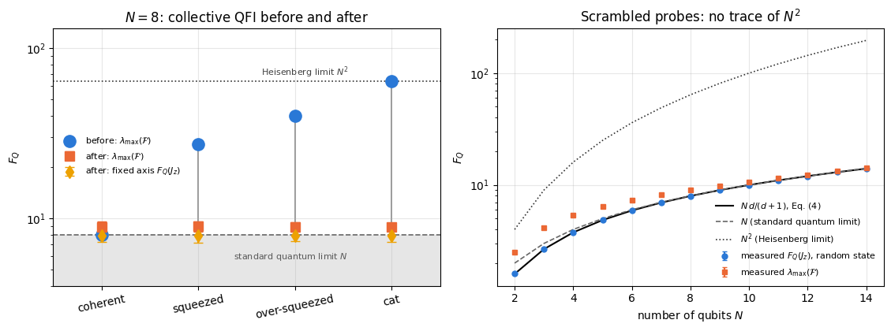
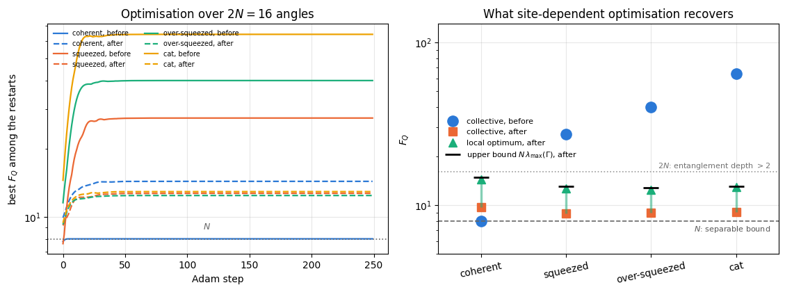
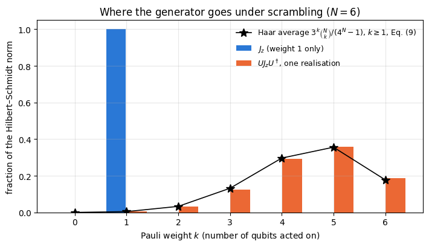
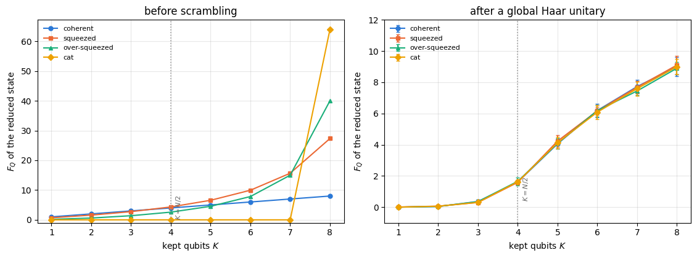

A metrological probe is a fragile object. Notebook 34 built one: starting from \(N\) atoms all pointing along \(x\), the one-axis-twisting interaction winds them into a spin-squeezed state and, at the right moment, into a Schrödinger-cat state whose quantum Fisher information reaches the Heisenberg value \(F_Q=N^2\). Between the moment the probe is made and the moment it is read out, the atoms keep interacting with each other and with their surroundings. Generic interactions scramble: they take the information that was stored in a few simple, measurable correlations and spread it over the whole Hilbert space.
This notebook answers a precise question. If a probe is scrambled by a unitary — nothing is lost, no energy leaks away, the state stays pure — what happens to its metrological power?
There is a naive argument that nothing should happen: scrambling increases entanglement, entanglement is the resource behind sub-shot-noise metrology, so a scrambled probe should be at least as good. There is an equally naive argument that everything is lost: a scrambled state looks random, and random states are useless. Both arguments are too crude, and the experiments below decide between them.
The answer, in one sentence, is that the information is relocated. A unitary \(U\) maps the pair (state, generator) to (scrambled state, scrambled generator), and the quantum Fisher information of the pair is unchanged:
What a laboratory can use, however, is not an arbitrary generator: a magnetic field couples to \(J_z=\tfrac12\sum_q\sigma^z_q\), a phase shift to a sum of single-qubit terms. These are the simplest operators in the algebra, and scrambling moves the information out of them into operators of high Pauli weight that no realistic interferometer implements. We will measure exactly how much moves, how fast, and how much can be recovered by optimising over the largest class of generators that is still physically reasonable — one arbitrary direction per qubit.
Road map.
Section 3 recalls the one-axis-twisting probes: a coherent state, a squeezed state, an over-squeezed state and a cat, four points along the same evolution with \(F_Q\) from \(N\) to \(N^2\).
Section 4 defines the two scramblers: a global Haar-random unitary (the idealised, instantaneous scrambler) and a random brick-wall circuit of two-qubit gates (a local, time-resolved one).
Section 5 measures entanglement before and after: the Page curve, with Page’s formula stated and checked.
Section 6 derives the Haar average \(\mathbb{E}\left[4\,\mathrm{Var}(J_{\mathbf n})\right]=Nd/(d+1)\) with \(d=2^N\) and verifies it. Every probe, whatever its \(F_Q\) was, lands on this number.
Section 7 enlarges the search: \(G=\tfrac12\sum_q\mathbf n_q\cdot\vec\sigma_q\) with a different direction on every qubit, optimised with jax.grad and Adam, batched over random restarts with vmap.
Section 8 verifies the invariance identity numerically and decomposes the scrambled generator \(UJ_zU^\dagger\) into Pauli strings, measuring how its weight is distributed.
Section 9 resolves the process in time: \(F_Q\) and entanglement gate by gate and layer by layer in a brick-wall circuit, with the gate-by-gate collapse of the cat derived exactly.
Section 10 asks what a subsystem retains, using the mixed-state quantum Fisher information, and finds the metrological analogue of the Page curve.
What you will learn
Physics
why entanglement is necessary but very far from sufficient for metrological usefulness, demonstrated on states that are driven from \(F_Q=N^2\) to \(F_Q\approx N\) while their entanglement entropy grows to the Page value;
the Page value of the entanglement entropy of a random state and the shape of the Page curve;
the exact Haar average of the collective quantum Fisher information, \(Nd/(d+1)\), derived from the second moment of the Haar measure;
that scrambling transfers the parameter dependence from weight-one operators into operators of typical Pauli weight \(3N/4\), and that the mean Pauli weight distribution is \(3^k\binom{N}{k}/(4^N-1)\);
that a subsystem of fewer than half the qubits of a scrambled probe carries almost no phase information, and that the information reappears only beyond the half-way point, growing to the full value as the last qubits are added.
Numerical methods
the \(3\times3\) quantum Fisher information matrix and its largest eigenvalue as an exact optimisation over collective directions;
gradient-based optimisation over \(2N\) angles with jax.value_and_grad, Adam, and vmap over random restarts;
the mixed-state (symmetric-logarithmic-derivative) quantum Fisher information of a reduced state with Schmidt/QR compression;
a Pauli decomposition of a dense operator and its weight spectrum.
Implementation practice
vmap over circuit realisations and over restarts; lax.scan over circuit layers; explicit PRNG keys;
separating a statistical fluctuation from a systematic effect (the largest eigenvalue of a fluctuating \(3\times3\) matrix is biased upwards — a trap we walk into deliberately and then measure);
quoting ensemble averages with standard errors, and reporting what was measured rather than what was expected.
What comes next.36 — quantum Fisher information with classical shadows asks how the quantities computed here could be measured in an experiment, from randomised measurements, and returns to the scrambled states of this notebook as a test case.
Conventions. Qubit \(q\) = tensor axis \(q\); \(\vert0\rangle\) is the \(+1\) eigenstate of \(Z\). Collective spin operators are \(J_a=\tfrac12\sum_q\sigma^a_q\), so the standard quantum limit is \(F_Q=N\) and the Heisenberg limit is \(F_Q=N^2\). The parameter is imprinted by \(U(\theta)=e^{-i\theta G}\) with a Hermitian generator \(G\).
Configuration
Every notebook of this course starts with the same cell. Choose where to run (DEVICE) and the floating-point precision (PRECISION): "double" = float64/complex128 (default, recommended for physics), "single" = float32/complex64 (half the memory, faster on consumer GPUs, but watch the round-off). All code below derives its dtypes from RDTYPE/CDTYPE and its check tolerances from TOL, so nothing else needs to change.
Code
# ==============================================================================# CONFIGURATION -- adapt to your hardware, then run the notebook top to bottom# ==============================================================================DEVICE ="auto"# "auto": use a GPU if JAX finds one, else CPU | "cpu" | "gpu"PRECISION ="double"# "double": float64/complex128 | "single": float32/complex64import osif DEVICE =="cpu": os.environ["JAX_PLATFORMS"] ="cpu"# must be set BEFORE jax is importedimport osimport stringfrom functools import partialimport mathimport numpy as npimport jaximport jax.numpy as jnpfrom jax import lax# Precision is configurable: "double" = float64/complex128 (default; needed for long time evolutions and# tight validation), "single" = float32/complex64 (half the memory, faster on consumer GPUs).# In a notebook PRECISION is defined in the Configuration cell; for this module use the env var QE_PRECISION.PRECISION =globals().get("PRECISION", os.environ.get("QE_PRECISION", "double"))jax.config.update("jax_enable_x64", PRECISION =="double")RDTYPE = jnp.float64 if PRECISION =="double"else jnp.float32 # real dtypeCDTYPE = jnp.complex128 if PRECISION =="double"else jnp.complex64 # complex dtype of all states/operatorsTOL =1e-10if PRECISION =="double"else1e-4# tolerance for sanity checks (asserts)_LETTERS = string.ascii_letters # 52 einsum labels; a call needs (axes + new labels) <= 52: apply_gate on a state# N + k <= 52 (N <= 51 for k = 1), apply_gate_dm 2N + k <= 52 (N <= 25 for k = 1, 2),# apply_kraus_dm 2N + 2k + 1 <= 52 (N <= 24 for k = 1, N <= 23 for k = 2)import timeimport matplotlib.pyplot as pltif DEVICE =="gpu"and jax.default_backend() =="cpu":print("WARNING: DEVICE='gpu' requested but JAX found no GPU -- running on CPU.")print(f"JAX {jax.__version__} | backend: {jax.default_backend()} | devices: {jax.devices()}")print(f"precision: {PRECISION} -> real {RDTYPE.__name__}, complex {CDTYPE.__name__}, check tolerance TOL={TOL:g}")
JAX 0.11.0 | backend: cpu | devices: [CpuDevice(id=0)]
precision: double -> real float64, complex complex128, check tolerance TOL=1e-10
2. Engine recap and notebook helpers
From the engine we reuse the state constructors, apply_gate (the einsum that applies a small matrix to chosen axes), apply_collective (the matrix-free \(\sum_qP_q\)), qfi_pure, spin_moments, spin_squeezing, oat_evolve (the exact diagonal one-axis-twisting propagator), haar_unitary, brickwall, collective_dense and the entropy routines. The Adam optimiser of Section 7 is the engine’s adam_init / adam_update. Everything else is built below.
Engine recap — the simulator primitives used in this notebook (click to expand)
# ==============================================================================# ENGINE RECAP: the functions of quantum_engine.py (SmoQ.jax) used in this notebook.# Each one is derived, with its mathematics and an independent check, in notebook 08b# (Chapter 3), 'Building the quantum simulator engine'.# States are rank-N tensors of shape (2,)*N; every operator acts through ONE einsum.# ==============================================================================# ----------------------------------------------------------------------------# 1. Elementary matrices: Paulis, Clifford generators, rotations# ----------------------------------------------------------------------------I2 = jnp.eye(2, dtype=CDTYPE)X = jnp.array([[0, 1], [1, 0]], dtype=CDTYPE)Y = jnp.array([[0, -1j], [1j, 0]], dtype=CDTYPE)Z = jnp.array([[1, 0], [0, -1]], dtype=CDTYPE)H = jnp.array([[1, 1], [1, -1]], dtype=CDTYPE) / jnp.sqrt(2.0) # Hadamard: Z-basis <-> X-basisPAULI = {"I": I2, "X": X, "Y": Y, "Z": Z}# ----------------------------------------------------------------------------# 2. THE core primitive: a k-qubit operator acting on a tensor through ONE einsum# ----------------------------------------------------------------------------def apply_gate(psi, U, qubits):"""Apply a k-qubit operator U to the axes `qubits` of the tensor `psi`. MATH ---- One qubit (k=1), target q: psi'[s_0,..,a,..,s_{N-1}] = sum_b U[a,b] psi[s_0,..,b,..,s_{N-1}] Two qubits (k=2), targets (q1,q2); the 4x4 matrix is reshaped to U[a1,a2,b1,b2]: psi'[.., a1, .., a2, ..] = sum_{b1,b2} U[a1,a2,b1,b2] psi[.., b1, .., b2, ..] This IS the action of (1 x .. x U x .. x 1) -- written without ever building it. EINSUM TRANSLATION (generated automatically below) ------------------ N=3, q=1 : "db,abc->adc" d = new (output) index of qubit 1 N=4, q=(1,3) : "efbd,abcd->aecf" e,f = new indices of qubits 1 and 3 Recipe: label the axes of psi with letters a,b,c,...; give every target qubit a NEW letter (the next unused ones); U carries (new letters)+(old letters of the targets); the output is psi's labels with the target letters replaced by the new ones. IMPLEMENTATION NOTES -------------------- * reshape of U: (2^k,2^k) -> (2,)*2k. Row index = (a1..ak), column = (b1..bk), and the FIRST qubit in `qubits` is the most significant bit of the small matrix, i.e. it corresponds to the LEFT factor of kron(A,B). * `qubits` may be any distinct axes in any order: non-neighbouring gates cost the same. * U need not be unitary: projectors, Kraus operators and Hamiltonian terms reuse this. * psi may be ANY tensor with those axes of size 2: a state (rank N), a density tensor (rank 2N: ket axes 0..N-1, bra axes N..2N-1), ... COST O(2^k * 2^N) operations, O(2^N) memory (dense matrix: O(4^N) both). JAX `qubits` must be static Python ints (they define the einsum string); psi and U are traced, so the function can sit inside jit / grad / vmap / scan. """ qubits =tuple(int(q) for q in qubits) k, n =len(qubits), psi.ndim U = jnp.asarray(U, dtype=psi.dtype).reshape((2,) * (2* k)) # matrix -> rank-2k tensor inp =list(_LETTERS[:n]) # labels of psi's axes new = _LETTERS[n:n + k] # fresh labels for the outputs out = inp.copy()for a, q inzip(new, qubits): out[q] = a # target axes get the new labels sub =f"{''.join(new)}{''.join(inp[q] for q in qubits)},{''.join(inp)}->{''.join(out)}"return jnp.einsum(sub, U, psi)# ----------------------------------------------------------------------------# 3. State preparation# ----------------------------------------------------------------------------_KETS = {"0": [1, 0], "1": [0, 1], "+": [1, 1], "-": [1, -1], "r": [1, 1j], "l": [1, -1j]}def product_state(spec):"""Product state from a string, one character per qubit: product_state('01+-') = |0>|1>|+>|->. ('r','l' = the +1/-1 eigenstates of Y.) MATH psi[s_0,...,s_{N-1}] = v0[s_0] v1[s_1] ... v_{N-1}[s_{N-1}] EINSUM an outer product = einsum with NO summed index: "a,b,c->abc". A product state needs only 2N numbers; entanglement is what makes all 2^N necessary. """ vecs = [jnp.array(_KETS[c], dtype=CDTYPE) / jnp.linalg.norm(jnp.array(_KETS[c], dtype=CDTYPE))for c in spec] n =len(vecs) sub =",".join(_LETTERS[i] for i inrange(n)) +"->"+ _LETTERS[:n]return jnp.einsum(sub, *vecs)def ghz_state(N):"""GHZ state (|0...0> + |1...1>)/sqrt(2): two non-zero entries of the rank-N tensor.""" psi = jnp.zeros((2,) * N, dtype=CDTYPE)return psi.at[(0,) * N].set(1/ jnp.sqrt(2.0)).at[(1,) * N].set(1/ jnp.sqrt(2.0))def haar_state(key, N):"""Haar-random pure state: a complex Gaussian vector, normalised. (The Gaussian measure is unitarily invariant, so the direction is uniformly distributed.) `key` is an explicit JAX PRNG key -- same key, same state: reproducible science.""" k1, k2 = jax.random.split(key) v = jax.random.normal(k1, (2,) * N) +1j* jax.random.normal(k2, (2,) * N)return (v / jnp.linalg.norm(v)).astype(CDTYPE)def to_dm(psi):"""Pure state -> density TENSOR rho[s..; s'..] = psi[s..] psi^*[s'..] (rank 2N). An outer product: einsum "ab,AB->abAB" -- here via the equivalent tensordot(axes=0)."""return jnp.tensordot(psi, jnp.conj(psi), axes=0)def dm_matrix(rho):"""View a rank-2N density tensor as an ordinary 2^N x 2^N matrix (a reshape, no copy of meaning).""" d =int(round(np.sqrt(rho.size)))return rho.reshape(d, d)# ----------------------------------------------------------------------------# 4. Reduced density matrices & observables (matrix-free)# ----------------------------------------------------------------------------def apply_pauli_string(psi, ops):"""Apply a Pauli string P = P_0 x P_1 x ... to psi. `ops` is a dict {qubit: 'X'|'Y'|'Z'} or a string like 'XIZY' (one letter per qubit; 'I' skipped). N single-qubit einsums -- cost O(N 2^N) -- instead of one 2^N x 2^N matrix."""ifisinstance(ops, str): ops = {q: p for q, p inenumerate(ops) if p !="I"}for q, p in ops.items(): psi = apply_gate(psi, PAULI[p], [q])return psi# ----------------------------------------------------------------------------# 5. State characteristics: entropies, fidelity, negativity# ----------------------------------------------------------------------------def schmidt_values(psi, subsystem):"""Schmidt coefficients of the bipartition A|B with A = `subsystem`. MATH Group the tensor axes into a matrix M[(a),(b)] = psi[a,b] of shape (2^|A|, 2^|B|). Its SVD M = U diag(lambda) V^dag IS the Schmidt decomposition |psi> = sum_k lambda_k |u_k>_A |v_k>_B , rho_A has eigenvalues lambda_k^2. IMPLEMENTATION transpose (A axes first) -> reshape -> svd. No density matrix needed. """ A =tuple(int(q) for q in subsystem) B =tuple(q for q inrange(psi.ndim) if q notin A) M = jnp.transpose(psi, A + B).reshape(2**len(A), -1)return jnp.linalg.svd(M, compute_uv=False)def entanglement_entropy(psi, subsystem, base=2.0):"""Entanglement entropy S_A = -sum_k p_k log p_k with p_k = lambda_k^2 (squared Schmidt values). Product state: 0. Bell/GHZ across any cut: 1 bit. Random state: ~ |A| - 1/(2 ln2) 2^{|A|-|B|} (Page).""" p = jnp.clip(schmidt_values(psi, subsystem) **2, 1e-16, None)return-jnp.sum(p * jnp.log(p)) / jnp.log(base)# ----------------------------------------------------------------------------# 11. Collective spins, spin squeezing, quantum Fisher information# ----------------------------------------------------------------------------def apply_collective(psi, P, qubits=None):"""(sum_q P_q)|psi> for a single-qubit operator P -- N einsums, O(N 2^N). Note: NO factor 1/2 here; the collective spin is J_a = (1/2) sum_q sigma^a_q.""" qubits =range(psi.ndim) if qubits isNoneelse qubits out = jnp.zeros_like(psi)for q in qubits: out = out + apply_gate(psi, P, [q])return outdef qfi_pure(psi, P=Z, qubits=None):"""Quantum Fisher information of a pure state for the phase imprinted by exp(-i theta J), J = (1/2) sum_q P_q: F_Q = 4 Var(J) = <G^2> - <G>^2 with G = sum_q P_q = 2J. Cramer-Rao: Delta theta >= 1/sqrt(M F_Q). Product states F_Q <= N (standard quantum limit); GHZ: F_Q = N^2 (Heisenberg limit). Matrix-free: |phi> = G|psi>, <G^2> = <phi|phi>, <G> = <psi|phi>.""" phi = apply_collective(psi, P, qubits)return jnp.real(jnp.vdot(phi, phi)) - jnp.real(jnp.vdot(psi, phi)) **2def collective_dense(P, n):"""Dense J = (1/2) sum_q P_q on n qubits (input of `qfi_mixed`), built from the matrix-free action on the basis vectors (vmap), exactly like `dense_hamiltonian`.""" eye = jnp.eye(2** n, dtype=CDTYPE).reshape((2** n,) + (2,) * n)return0.5* jax.vmap(lambda e: apply_collective(e, P).reshape(-1))(eye).Tdef spin_moments(psi):"""Mean collective spin <J_a> (shape 3) and symmetrised covariance matrix C_ab = (1/2)<J_a J_b + J_b J_a> - <J_a><J_b> (shape 3x3). Trick: |phi_a> = J_a|psi> => <J_a J_b> = <phi_a|phi_b>, and its real part is the symmetrised moment.""" phis = [0.5* apply_collective(psi, P) for P in (X, Y, Z)] mean = jnp.stack([jnp.real(jnp.vdot(psi, p)) for p in phis]) second = jnp.stack([jnp.stack([jnp.real(jnp.vdot(a, b)) for b in phis]) for a in phis])return mean, second - jnp.outer(mean, mean)def spin_squeezing(psi):"""Wineland spin-squeezing parameter xi^2_R = N * min_{n_perp} Var(J_{n_perp}) / |<J>|^2 . xi^2 < 1: phase sensitivity beyond the standard quantum limit (and the state is entangled). Implementation: project the 3x3 covariance onto the plane perpendicular to the mean spin and take the smaller eigenvalue of the resulting 2x2 matrix.""" N = psi.ndim mean, cov = spin_moments(psi) L = jnp.linalg.norm(mean) n = mean / L a = jnp.where(jnp.abs(n[2]) <0.9, jnp.array([0.0, 0.0, 1.0]), jnp.array([1.0, 0.0, 0.0])) e1 = jnp.cross(n, a) e1 = e1 / jnp.linalg.norm(e1) e2 = jnp.cross(n, e1) B = jnp.stack([e1, e2]) vmin = jnp.linalg.eigvalsh(B @ cov @ B.T)[0]return N * vmin / L **2def oat_evolve(psi, chi_t):"""One-axis twisting exp(-i chi t J_z^2) applied EXACTLY. J_z is diagonal in the computational basis with eigenvalue m(s) = sum_q (1/2 - s_q), so the evolution multiplies each amplitude by a phase exp(-i chi t m^2): O(2^N), no Trotter error, no gates. m(s) is assembled by BROADCASTING N arrays of shape (1,..,2,..,1) -- a tensor-network-free way of writing a sum over sites. [Note: chi sum_{i<j} Z_i Z_j = 2 chi J_z^2 - chi N/2.]""" N = psi.ndim m =sum(jnp.array([0.5, -0.5]).reshape([2if a == q else1for a inrange(N)]) for q inrange(N))return psi * jnp.exp(-1j* chi_t * m **2)# ----------------------------------------------------------------------------# 12. Random unitaries, Clifford group, brick-wall circuits# ----------------------------------------------------------------------------def haar_unitary(key, d):"""Haar-random d x d unitary (Mezzadri's recipe): QR-decompose a complex Ginibre matrix and fix the phases of R's diagonal -- without the phase fix the distribution is NOT Haar.""" k1, k2 = jax.random.split(key) G = (jax.random.normal(k1, (d, d)) +1j* jax.random.normal(k2, (d, d))) / jnp.sqrt(2.0) Q, R = jnp.linalg.qr(G) ph = jnp.diagonal(R) / jnp.abs(jnp.diagonal(R))return Q * ph[None, :]def brickwall(key, psi, depth, periodic=False):"""Random brick-wall circuit: layers of Haar-random 2-qubit gates on even bonds, then odd bonds, ... Depth ~ N turns a product state into a (nearly) Haar-random state: volume-law entanglement (Page).""" N = psi.ndimfor layer inrange(depth): bonds = [(i, i +1) for i inrange(layer %2, N -1, 2)]if periodic and N %2==0and layer %2==1: bonds.append((N -1, 0)) key, *ks = jax.random.split(key, len(bonds) +1)for k, b inzip(ks, bonds): psi = apply_gate(psi, haar_unitary(k, 4), b)return psi# ----------------------------------------------------------------------------# 15. Variational circuits: ansatz, gradients, optimizers# ----------------------------------------------------------------------------def adam_init(theta):"""Adam state: (first moment m, second moment v, step counter t)."""return (jnp.zeros_like(theta), jnp.zeros_like(theta), 0)def adam_update(theta, g, state, lr=0.05, b1=0.9, b2=0.999, eps=1e-8):"""One Adam step (Kingma & Ba): m <- b1 m + (1-b1) g, v <- b2 v + (1-b2) g^2, theta <- theta - lr * m_hat / (sqrt(v_hat) + eps), hats = bias-corrected moments. Momentum (m) averages noisy gradients (great with SPSA); v gives a per-parameter step size.""" m, v, t = state t = t +1 m = b1 * m + (1- b1) * g v = b2 * v + (1- b2) * g **2 theta = theta - lr * (m / (1- b1 ** t)) / (jnp.sqrt(v / (1- b2 ** t)) + eps)return theta, (m, v, t)
Code
# ==============================================================================# PLOT STYLE + small helpers used throughout this notebook# ==============================================================================PALETTE = ["#2a78d6", "#eb6834", "#1baf7a", "#eda100", "#e87ba4", "#4a3aa7"] # colour-blind-friendly, fixed orderMARKERS = ["o", "s", "^", "D", "v", "P"]plt.rcParams.update({"axes.prop_cycle": plt.cycler(color=PALETTE), "axes.grid": True,"grid.alpha": 0.3, "font.size": 10, "legend.frameon": False})def max_abs(a):"""Largest absolute entry of an array, as a Python float."""returnfloat(jnp.max(jnp.abs(jnp.asarray(a))))def pauli_direction(n):"""Single-qubit matrix n.sigma = n_x X + n_y Y + n_z Z for a real 3-vector n.""" n = jnp.asarray(n, dtype=CDTYPE)return n[0] * X + n[1] * Y + n[2] * Zdef qfi_matrix(psi):"""3x3 quantum Fisher information matrix over the collective generators (J_x, J_y, J_z). MATH Fcal[a,b] = 4 * ( (1/2)<J_a J_b + J_b J_a> - <J_a><J_b> ), F_Q(n) = n^T Fcal n (derived in notebook 29; `spin_moments` returns the symmetrised covariance matrix-free). COST three applications of J_a: O(N 2^N) time, O(2^N) memory. """ _, cov = spin_moments(psi)return4.0* covdef qfi_collective_max(psi):"""Largest eigenvalue of the 3x3 QFI matrix = max over all collective directions n of 4 Var(n.J)."""return jnp.linalg.eigvalsh(qfi_matrix(psi))[-1]def optimal_direction(psi):"""(F_max, n_opt): the best collective generator direction and the QFI it delivers.""" w, v = jnp.linalg.eigh(qfi_matrix(psi))return w[-1], v[:, -1]def timed(f, *args, budget=0.3, min_reps=3, max_reps=200):"""Return (result, compile_time, best_run_time); JAX is asynchronous, so every value is blocked on.""" t0 = time.time() out = jax.block_until_ready(f(*args)) t_compile = time.time() - t0 best, n, t_start = np.inf, 0, time.time()while n < min_reps or (time.time() - t_start < budget and n < max_reps): t0 = time.time() out = jax.block_until_ready(f(*args)) best =min(best, time.time() - t0) n +=1return out, t_compile, best
3. The probes: one-axis twisting in one page
This section is a self-contained recap of what notebooks 33 and 34 established; nothing is re-derived.
Start from the coherent spin state\(\vert+\rangle^{\otimes N}\): every qubit points along \(+x\), the collective spin has length \(\langle J_x\rangle=N/2\), and the transverse fluctuations are isotropic, \(\mathrm{Var}(J_y)=\mathrm{Var}(J_z)=N/4\). Its quantum Fisher information is \(F_Q=N\) for any generator perpendicular to \(x\) — the standard quantum limit.
The one-axis-twisting Hamiltonian is
\[H_{\rm OAT}=\chi J_z^2,\qquad U(t)=e^{-i\chi t J_z^2}=e^{-i\mu J_z^2},\]
with the dimensionless twisting angle \(\mu=\chi t\). Because \(J_z\) is diagonal in the computational basis with eigenvalue \(m(s)=\sum_q\left(\tfrac12-s_q\right)\), the propagator is a pure phase multiplication, \(\psi[s]\mapsto e^{-i\mu m(s)^2}\psi[s]\): exact, \(O(2^N)\), no Trotter error. That is the engine’s oat_evolve.
Four points along the evolution define our probes.
probe
twisting angle \(\mu\)
what it is
coherent
\(0\)
the unsqueezed starting state, \(F_Q=N\)
squeezed
\(\mu_{\rm opt}\sim N^{-2/3}\)
minimal Wineland parameter \(\xi_R^2\), the useful regime
over-squeezed
\(0.5\)
past the minimum: \(\xi_R^2>1\) but \(F_Q\) still grows
cat
\(\pi/2\)
a GHZ-like Schrödinger cat, \(F_Q=N^2\)
Two facts from notebook 34 that we will use. At \(\mu=\pi/2\) the state is a two-component cat whose two lobes sit at the poles of the \(x\) axis, so the optimal generator direction is \(\mathbf n=\hat x\) (not \(\hat z\)); and the Wineland squeezing parameter \(\xi_R^2=N\min_{\mathbf n_\perp}\mathrm{Var}(J_{\mathbf n_\perp})/\vert\langle\mathbf J\rangle\vert^2\) diverges there, because the mean spin vanishes — squeezing stops being a meaningful figure of merit long before \(F_Q\) stops growing.
We build the four probes and read off their quantum Fisher information from the \(3\times3\) matrix of Section 12 of notebook 29: \(F_Q(\mathbf n)=\mathbf n^{\mathsf T}\mathcal{F}\mathbf n\) with \(\mathcal{F}_{ab}=4\left[\tfrac12\langle J_aJ_b+J_bJ_a\rangle-\langle J_a\rangle\langle J_b\rangle\right]\), so the best collective direction is the largest eigenvector of \(\mathcal{F}\).
Code
# ==============================================================================# STEP 1: the four one-axis-twisting probes# ==============================================================================# PARAMETERS ------------------------------------------------------------------N_MAIN =8# system size of the main experiments (2^8 = 256 amplitudes)MU_OVER =0.5# "over-squeezed" twisting angleMU_CAT = np.pi /2# cat time# -----------------------------------------------------------------------------def optimal_twisting_angle(N, n_grid=400, mu_max=1.0):"""Twisting angle that minimises the Wineland squeezing parameter, located on a grid. MATH xi_R^2(mu) = N min_{n perp <J>} Var(J_n) / |<J>|^2 -- the engine's `spin_squeezing`. IMPL a grid scan is enough here: we only need a representative "squeezed" probe, not the N^{-2/3} scaling law (that is the subject of notebook 33). JAX `vmap` over the whole grid: one compiled program evaluates all `n_grid` twisting angles. """ grid = jnp.linspace(mu_max / n_grid, mu_max, n_grid) psi0 = product_state("+"* N) xi = np.array(jax.vmap(lambda m: spin_squeezing(oat_evolve(psi0, m)))(grid))returnfloat(grid[int(np.argmin(xi))]), float(xi.min())MU_SQ, XI_SQ = optimal_twisting_angle(N_MAIN)PROBE_MU = {"coherent": 0.0, "squeezed": MU_SQ, "over-squeezed": MU_OVER, "cat": MU_CAT}PROBE_LBL = {"coherent": "coherent", "squeezed": "squeezed", "over-squeezed": "over-squeezed", "cat": "cat"}def oat_probe(N, mu):"""|psi(mu)> = exp(-i mu J_z^2) |+>^N -- the one-axis-twisting probe at twisting angle mu."""return oat_evolve(product_state("+"* N), mu)probes = {name: oat_probe(N_MAIN, mu) for name, mu in PROBE_MU.items()}print(f"N = {N_MAIN}: standard quantum limit F_Q = {N_MAIN}, Heisenberg limit F_Q = {N_MAIN **2}")print(f"optimal twisting angle (grid): mu_opt = {MU_SQ:.4f}, xi_R^2 = {XI_SQ:.4f}\n")def clean_direction(n):"""Fix the irrelevant global sign of an eigenvector and round numerical zeros away, for printing.""" n = np.array(n, dtype=float) n = n * np.sign(n[int(np.argmax(np.abs(n)))])return np.where(np.abs(n) <1e-9, 0.0, n)print(f"{'probe':>14s}{'mu':>7s} | {'F_max':>9s}{'F_max/N':>8s}{'n_opt':>24s} "f"{'xi_R^2':>12s}{'S(N/2 cut)':>11s}")for name, psi in probes.items(): fmax, nopt = optimal_direction(psi) S =float(entanglement_entropy(psi, range(N_MAIN //2))) xi =float(spin_squeezing(psi)) xi_str =f"{xi:12.4f}"if xi <1e3elsef"{xi:12.2e}"print(f"{name:>14s}{PROBE_MU[name]:7.4f} | {float(fmax):9.4f}{float(fmax) / N_MAIN:8.3f} "f"{np.array2string(clean_direction(nopt), precision=3, floatmode='fixed'):>24s} "f"{xi_str}{S:11.3f}")# --- CHECKPOINT: the two analytic anchors of the family ------------------------------assertabs(float(qfi_collective_max(probes["coherent"])) - N_MAIN) <1e4* TOLassertabs(float(qfi_collective_max(probes["cat"])) - N_MAIN **2) <1e4* TOLprint(f"\nCHECKPOINT coherent -> F_max = N = {N_MAIN} and cat -> F_max = N^2 = {N_MAIN **2} "f"(both to better than {1e4* TOL:.0e})")
CHECKPOINT coherent -> F_max = N = 8 and cat -> F_max = N^2 = 64 (both to better than 1e-06)
The table summarises what Section 6 will erase. The four probes span the full metrological range, from \(F_Q/N=1\) (nothing gained) to \(F_Q/N=N\) (the Heisenberg limit). The optimal direction rotates as the state twists: for the coherent state any direction perpendicular to the mean spin will do and the eigenvector returned is an arbitrary one in that plane; by the cat time it has locked onto \(\hat x\), the axis of the two cat lobes. The Wineland parameter \(\xi_R^2\) behaves as notebook 33 said it must: it reaches its minimum at \(\mu_{\rm opt}\), rises above \(1\) for the over-squeezed state (which nonetheless has a five times larger \(F_Q\) than the coherent state), and is astronomically large for the cat, where the mean spin in its denominator has collapsed to zero.
The last column is the one to keep in mind: the entanglement entropy across the middle cut is small for all four probes — one bit for the cat, \(0.71\) bit for the squeezed state and \(1.54\) bits for the over-squeezed one, against a maximum of \(N/2=4\) bits. Useful probes are weakly entangled by the standards of a random state.
4. Two scramblers
4.1 The global Haar unitary
The idealised scrambler applies a unitary drawn uniformly from the group \(\mathrm{U}(d)\), \(d=2^N\), i.e. from the Haar measure — the unique probability measure on the group that is invariant under left and right multiplication, \(\mathrm{d}\mu(U)=\mathrm{d}\mu(VU)=\mathrm{d}\mu(UV)\). Notebook 10 derives Mezzadri’s construction: QR-decompose a complex Ginibre matrix and fix the phases of the diagonal of \(R\); that is the engine’s haar_unitary. Applying it means one dense matrix-vector product, \(O(4^N)\) — affordable to \(N\approx10\)-\(12\) and exactly the “instantaneous, maximal” scrambler that bounds what any dynamics can do.
A consequence of the invariance of the Haar measure deserves to be stated before we measure anything, because it organises everything that follows. If \(U\) is Haar-distributed and \(\vert\psi\rangle\) is any fixed state, then \(U\vert\psi\rangle\) is distributed uniformly on the unit sphere of the Hilbert space — a Haar-random state — and the distribution does not depend on \(\vert\psi\rangle\) at all. The proof is one line: for any fixed unitary \(V\) the state \(VU\vert\psi\rangle\) has the same distribution as \(U\vert\psi\rangle\), because \(VU\) and \(U\) do; a distribution on the sphere invariant under all unitaries is the uniform one. And since some \(V\) maps any given \(\vert\psi\rangle\) to any other, the starting state is irrelevant.
So the outcome of Section 6 is already decided: all four probes will become statistically identical after global scrambling, and everything we measure about them will be a property of a Haar-random state. We use this twice: once as a check (scrambled cats versus states from the engine’s haar_state), and once as a saving — haar_state costs \(O(2^N)\) while drawing a \(2^N\times2^N\) Haar unitary costs \(O(8^N)\), which is what lets the system-size scan of Step 5 reach \(N=14\).
4.2 The brick-wall circuit
Physical dynamics is local and takes time. The minimal local model is the brick-wall circuit of notebook 10: layer \(\ell\) applies independent Haar-random two-qubit gates to the bonds \((0,1),(2,3),\dots\) when \(\ell\) is even and to \((1,2),(3,4),\dots\) when \(\ell\) is odd. After a depth of order \(N\) the state is indistinguishable from a Haar-random one by any low-order statistic. Depth is the clock of this notebook: it lets us ask not only whether the metrological advantage survives but how quickly it goes.
For Section 9 we want observables after every individual gate, not only after every layer, so we generate the gate list explicitly as (bond, U) pairs in the order they are applied.
Code
# ==============================================================================# STEP 2: the two scramblers# ==============================================================================def scramble_global(key, psi):"""Apply a Haar-random unitary on the FULL Hilbert space: |psi> -> U|psi>, U ~ Haar(2^N). MATH the global scrambler; d = 2^N. COST O(4^N) for the matrix-vector product plus O(8^N)-ish for the QR that draws U -- small N only. JAX `psi.reshape(-1)` is a view: a rank-N tensor and a length-2^N vector are the same buffer. """ N = psi.ndim U = haar_unitary(key, 2** N)return (U @ psi.reshape(-1)).reshape((2,) * N)def brickwall_gate_list(key, N, depth):"""The gates of a brick-wall circuit as a flat list [(bond, U), ...] in application order. Layer l acts on the bonds (l%2, l%2+1), (l%2+2, l%2+3), ... Every gate is an independent Haar 4x4. Returning a LIST (instead of applying directly) lets Section 9 record observables after each gate. """ gates = []for layer inrange(depth): bonds = [(i, i +1) for i inrange(layer %2, N -1, 2)] key, *ks = jax.random.split(key, len(bonds) +1) gates += [(b, haar_unitary(k, 4)) for k, b inzip(ks, bonds)]return gatesdef scramble_brickwall(key, psi, depth):"""Apply `depth` brick-wall layers of Haar-random two-qubit gates (the engine's `brickwall`)."""return brickwall(key, psi, depth)# --- CHECKPOINT: both scramblers are unitary (norm is preserved to machine precision) ------psi_t = probes["cat"]for label, out in (("global Haar", scramble_global(jax.random.PRNGKey(0), psi_t)), ("brick wall, depth 6", scramble_brickwall(jax.random.PRNGKey(0), psi_t, 6))): nrm =float(jnp.linalg.norm(out)) ov =float(jnp.abs(jnp.vdot(psi_t, out)) **2)print(f"{label:22s}: ||U psi|| - 1 = {nrm -1:+.2e} |<psi|U psi>|^2 = {ov:.6f}")assertabs(nrm -1) <1e4* TOL# --- CHECKPOINT: the gate list reproduces the engine's layer-by-layer circuit ------------------# Both split the key in the same way, so with the same key they must apply the same gates in the same order.gl = brickwall_gate_list(jax.random.PRNGKey(3), N_MAIN, 4)psi_a = psi_tfor b, U in gl: psi_a = apply_gate(psi_a, U, b)err_gl = max_abs(psi_a - scramble_brickwall(jax.random.PRNGKey(3), psi_t, 4))err_ctrl = max_abs(psi_a - scramble_brickwall(jax.random.PRNGKey(4), psi_t, 4)) # wrong key: must differprint(f"\ngate list of depth 4 on N = {N_MAIN}: {len(gl)} two-qubit gates; "f"max |gate list - engine brickwall| = {err_gl:.2e} (control with another key: {err_ctrl:.2e})")assert err_gl <1e3* TOL and err_ctrl >1e-3
gate list of depth 4 on N = 8: 14 two-qubit gates; max |gate list - engine brickwall| = 0.00e+00 (control with another key: 3.23e-01)
Both scramblers preserve the norm to machine precision, as unitaries must, and both send the state far from where it started. The overlap with the original cat state is \(0.0036\) for the global Haar unitary. The lemma predicts the order of magnitude: for a Haar-random state in dimension \(d\), \(\mathbb E\,\vert\langle\psi\vert U\psi\rangle\vert^2 =\langle\psi\vert\,\mathbb E\left[\vert\phi\rangle\langle\phi\vert\right]\vert\psi\rangle=1/d=0.0039\) for \(d=256\) (the first identity of Eq. (3) below with \(A=\vert\psi\rangle\langle\psi\vert\)), and the standard deviation of a single overlap is of the same size, so one realisation checks the order of magnitude only. Six brick-wall layers give \(0.0063\), of the same order. The second checkpoint confirms that the explicit gate list and the engine’s brickwall apply identical circuits for the same key.
5. Entanglement before and after: the Page curve
5.1 Page’s formula
Split the \(N\) qubits into \(A\) (the first \(k\)) and \(B\) (the rest), with dimensions \(d_A=2^k\) and \(d_B=2^{N-k}\). For a random pure state the reduced state \(\rho_A\) is close to maximally mixed but not exactly so. Page (1993) conjectured the exact average of its von Neumann entropy over the Haar measure, and the formula was proved shortly afterwards (Foong and Kanno 1994; Sánchez-Ruiz 1995). Writing \(m=\min(d_A,d_B)\) and \(n=\max(d_A,d_B)\), the average entropy in nats is
We quote Eq. (1) without proof (it is a calculation with the Laguerre ensemble of random-matrix theory); what matters for us are its two consequences. First, for a small subsystem, \(m\ll n\), the deficit \(m/(2n)\) is negligible and \(\langle S_A\rangle\approx\ln d_A\): a small piece of a random state is maximally mixed, and it carries no information about the state. Second, at the symmetric cut \(k=N/2\) we have \(m=n=2^{N/2}\) and
a constant deficit of about \(0.72\) bit below the maximum, independent of \(N\). The plot of \(\langle S_k\rangle\) against \(k\) — rising with slope one bit per qubit, bending over at \(k=N/2\) and descending symmetrically because \(S_A=S_B\) for a pure state — is the Page curve.
5.2 Measurement
We compute the entropy profile of the four probes before scrambling, after a global Haar unitary (averaged over realisations), and after brick-wall circuits of increasing depth, and compare with Eq. (1).
Code
# ==============================================================================# STEP 3: Page's formula, and the entropy profile of the probes before and after scrambling# ==============================================================================# PARAMETERS ------------------------------------------------------------------N_SAMPLES =48# scrambler realisations averaged overN_BW =8# brick-wall circuit realisations# -----------------------------------------------------------------------------def page_entropy_bits(dim_a, dim_b):"""Page's average entanglement entropy in BITS for subsystem dimensions dim_a, dim_b -- Eq. (1).""" m, n =min(dim_a, dim_b), max(dim_a, dim_b)returnfloat((np.sum(1.0/ np.arange(n +1, m * n +1)) - (m -1) / (2* n)) / np.log(2))CUTS =list(range(1, N_MAIN))@jax.jitdef entropy_profile(psi):"""Entanglement entropy (bits) of the first k qubits for k = 1 .. N-1 -- the Page curve of one state."""return jnp.stack([entanglement_entropy(psi, list(range(k))) for k in CUTS])page_curve = np.array([page_entropy_bits(2** k, 2** (N_MAIN - k)) for k in CUTS])# INDEPENDENT keys for every probe: sharing one set of unitaries across the probes would correlate the four# ensembles and make every "deviation in units of the standard error" below meaningless.keys_glob = {name: jax.random.split(jax.random.fold_in(jax.random.PRNGKey(2024), j), N_SAMPLES)for j, name inenumerate(probes)}t0 = time.time()scrambled = {name: jax.vmap(lambda k, p=psi: scramble_global(k, p))(keys_glob[name])for name, psi in probes.items()}prof_before = {name: np.array(entropy_profile(psi)) for name, psi in probes.items()}prof_after = {name: np.array(jax.vmap(entropy_profile)(st)) for name, st in scrambled.items()}print(f"({N_SAMPLES} global Haar unitaries applied to each of the {len(probes)} probes "f"in {time.time() - t0:.1f} s)\n")print(f"{'k':>3s}{'Page (bits)':>12s} | "+" ".join(f"{n[:9]:>20s}"for n in probes))for i, k inenumerate(CUTS): row =" ".join(f"{prof_before[n][i]:7.3f} ->{prof_after[n][:, i].mean():8.3f} "for n in probes)print(f"{k:3d}{page_curve[i]:12.3f} | {row}")dev =max(abs(prof_after[n][:, i].mean() - page_curve[i]) for n in probes for i inrange(len(CUTS)))print(f"\nlargest |mean S_k after scrambling - Page| over all probes and cuts: {dev:.4f} bit")assert dev <0.05
The left panel shows the two regimes. Before scrambling (filled symbols) the entropy profiles are flat and low: the cat state has exactly one bit at every cut — that is what a two-component superposition carries, no matter where you cut it — and the coherent state has exactly zero, being a product state. After a single global Haar unitary (white symbols) all four probes lie on Page’s curve, with a spread over realisations so small that the error bars are barely visible: the measured deviation from Eq. (1) never exceeds \(0.01\) bit. Scrambling has multiplied the half-chain entanglement of the cat state by more than three.
The right panel resolves the process in depth. The entropy grows in a staircase — only every second layer contains a gate straddling the central cut, so the curve is flat in between — and approaches the Page value of \(3.282\) bits after about \(16\) layers for \(N=8\) (\(3.264\pm0.015\) at depth \(16\), \(3.273\pm0.009\) at depth \(24\)). The two curves start from different values (one bit for the cat, zero for the product state), and the gap between them closes gradually as both approach the Page value: about \(0.75\) bit at depth \(4\), \(0.14\) bit at depth \(12\), \(0.06\) bit at depth \(16\) and \(0.02\) bit at depth \(24\).
By every entanglement measure, then, scrambling improves the state. Section 6 asks the metrological question.
6. The collective quantum Fisher information of a random state
6.1 The Haar average of the QFI
What is \(F_Q=4\,\mathrm{Var}(J_{\mathbf n})\) for a state drawn uniformly at random? The calculation needs one input, the second moment of the Haar measure on pure states: for any operators \(A,B\) on a \(d\)-dimensional space,
where \(\mathbb S\) is the swap operator on the two copies, \(\mathbb S\,(\vert u\rangle\otimes\vert v\rangle) =\vert v\rangle\otimes\vert u\rangle\). Equation (2) says that the average of two copies of a random state is proportional to the projector onto the symmetric subspace, \((\mathbb 1+\mathbb S)/2\), whose dimension is \(d(d+1)/2\); this is forced by Schur–Weyl duality, since the average must commute with \(U\otimes U\) for every \(U\) and the only such operators are combinations of \(\mathbb 1\) and \(\mathbb S\). Two standard traces follow:
where we used \(\mathrm{Tr}\left[(A\otimes B)\mathbb S\right]=\mathrm{Tr}(AB)\).
Now take \(A=B=\tilde G=\sum_q(\mathbf n\cdot\vec\sigma)_q=2J_{\mathbf n}\), so that \(F_Q=\langle\tilde G^2\rangle-\langle\tilde G\rangle^2\) (the convention of qfi_pure). Two traces are needed. Every Pauli operator is traceless, hence
\[\mathrm{Tr}\,\tilde G=0 .\]
For the square, \(\tilde G^2=\sum_{q,q'}(\mathbf n\cdot\vec\sigma)_q(\mathbf n\cdot\vec\sigma)_{q'}\). The diagonal terms give \((\mathbf n\cdot\vec\sigma)^2=\mathbb 1\) for a unit vector \(\mathbf n\), so they contribute \(N\mathbb 1\); the off-diagonal terms are products of Paulis on different qubits, hence traceless. Therefore
with \(d=2^N\). A typical state of the Hilbert space — maximally entangled by the Page criterion — has a collective quantum Fisher information below the standard quantum limit, approaching it exponentially fast from below.
Two remarks that we shall need. Eq. (4) does not depend on \(\mathbf n\): the derivation used only \(\mathrm{Tr}\tilde G=0\) and \(\mathrm{Tr}\tilde G^2=Nd\), which hold for every unit vector. Eq. (4) is an average, not a value. Individual states fluctuate around it, and the largest eigenvalue of the fluctuating \(3\times3\) matrix \(\mathcal{F}\) is therefore systematically larger than \(\mathbb E[F_Q]\) — a maximum of correlated random variables is biased upwards. We measure both quantities separately so the effect cannot be mistaken for physics.
6.2 Measurement
Code
# ==============================================================================# STEP 4: collective QFI before and after a global Haar unitary# ==============================================================================d_main =2** N_MAINhaar_prediction = N_MAIN * d_main / (d_main +1)@jax.jitdef qfi_diag_and_max(psi):"""(F_xx, F_yy, F_zz, lambda_max) of the 3x3 QFI matrix -- fixed-axis values plus the optimised one.""" F = qfi_matrix(psi)return jnp.concatenate([jnp.diag(F), jnp.linalg.eigvalsh(F)[-1:]])stats = {name: np.array(jax.vmap(qfi_diag_and_max)(st)) for name, st in scrambled.items()}print(f"N = {N_MAIN}, d = {d_main}, Haar prediction of Eq. (4): N d/(d+1) = {haar_prediction:.4f}")print(f"(averages over {N_SAMPLES} global Haar unitaries; +- is the standard error of the mean)\n")print(f"{'probe':>14s} | {'F_max before':>12s} | {'F_Q(J_z) after':>22s} "f"{'mean of F_Q(J_x,J_y,J_z)':>28s}{'F_max after':>22s}")for name in probes: s = stats[name] fz, avg3, mx = s[:, 2], s[:, :3].mean(axis=1), s[:, 3]print(f"{name:>14s} | {float(qfi_collective_max(probes[name])):12.4f} | "f"{fz.mean():10.4f} +- {fz.std() / np.sqrt(N_SAMPLES):<8.4f} "f"{avg3.mean():14.4f} +- {avg3.std() / np.sqrt(N_SAMPLES):<8.4f} "f"{mx.mean():10.4f} +- {mx.std() / np.sqrt(N_SAMPLES):<8.4f}")# Pool the INDEPENDENT units: one number per scrambled state (the mean of its three Cartesian values).# The three diagonal entries of one state are correlated, so they must not be counted as three samples.pooled_all = np.concatenate([stats[n][:, :3].mean(axis=1) for n in probes])sem_all = pooled_all.std() / np.sqrt(pooled_all.size)z = (pooled_all.mean() - haar_prediction) / sem_allprint(f"\nall {pooled_all.size} scrambled states pooled: {pooled_all.mean():.4f} +- {sem_all:.4f} "f"(prediction {haar_prediction:.4f}, deviation {z:+.2f} standard errors)")assertabs(z) <4.0
N = 8, d = 256, Haar prediction of Eq. (4): N d/(d+1) = 7.9689
(averages over 48 global Haar unitaries; +- is the standard error of the mean)
probe | F_max before | F_Q(J_z) after mean of F_Q(J_x,J_y,J_z) F_max after
coherent | 8.0000 | 7.9010 +- 0.0916 7.9887 +- 0.0579 8.9235 +- 0.0914
squeezed | 27.3259 | 7.8560 +- 0.0939 7.9534 +- 0.0642 8.9419 +- 0.0837
# ==============================================================================# STEP 5a: scrambled probes really are Haar-random states -- the lemma of Section 4.1, tested# ==============================================================================keys_hs = jax.random.split(jax.random.PRNGKey(555), 4* N_SAMPLES)direct_haar = np.array(jax.vmap(lambda k: qfi_diag_and_max(haar_state(k, N_MAIN)))(keys_hs))pooled_scr = pooled_all # one value per scrambled probe (Step 4)pooled_dir = direct_haar[:, :3].mean(axis=1) # the same statistic for direct Haar statesprint(f"mean of F_Q(J_x,J_y,J_z), scrambled probes : {pooled_scr.mean():.4f} "f"(sample std {pooled_scr.std():.4f}, {pooled_scr.size} states)")print(f"mean of F_Q(J_x,J_y,J_z), `haar_state` states : {pooled_dir.mean():.4f} "f"(sample std {pooled_dir.std():.4f}, {pooled_dir.size} states)")diff = pooled_scr.mean() - pooled_dir.mean()sed = np.sqrt(pooled_scr.var() / pooled_scr.size + pooled_dir.var() / pooled_dir.size)print(f"difference of the two means : {diff:+.4f} +- {sed:.4f} "f"({diff / sed:+.2f} standard errors)")assertabs(diff / sed) <4.0# power control: with the scrambler skipped, the 192 "scrambled" states would be 48 copies of each probe;# that sample, run through the same test, must fail itpooled_raw = np.repeat([float(jnp.trace(qfi_matrix(p))) /3for p in probes.values()], N_SAMPLES)z_raw = (pooled_raw.mean() - pooled_dir.mean()) / np.sqrt(pooled_raw.var() / pooled_raw.size + pooled_dir.var() / pooled_dir.size)print(f"wrong control (probes NOT scrambled) : {z_raw:+.2f} standard errors")assertabs(z_raw) >4.0# ==============================================================================# STEP 5b: Eq. (4) at every N -- fixed-axis QFI of Haar-random states, N = 2 .. 14# ==============================================================================N_RANGE =range(2, 15)scale_rows = []t0 = time.time()for N in N_RANGE:# small systems fluctuate most and cost least; 4096 samples at N <= 6 give the scan the power to tell# Eq. (4) apart from nearby wrong formulas (see the controls below) n_s =4096if N <=6else (512if N <=8else128) ks = jax.random.split(jax.random.PRNGKey(N), n_s) out = np.array(jax.vmap(lambda k: qfi_diag_and_max(haar_state(k, N)))(ks)) vals, mx = out[:, 2], out[:, 3] scale_rows.append((N, vals.mean(), vals.std() / np.sqrt(n_s), mx.mean(), mx.std() / np.sqrt(n_s), N *2** N / (2** N +1), n_s, vals.std()))print(f"\n(N = 2 .. 14 in {time.time() - t0:.1f} s)\n")print(f"{'N':>3s}{'#':>5s} | {'F_Q(J_z)':>20s}{'N d/(d+1)':>11s}{'diff/sem':>9s} | {'F_max':>20s} "f"{'F_max - N':>10s} | {'sd of F_Q(J_z)':>14s}{'(F_max - Nd/(d+1))/sd':>22s}")worst_z =0.0for N, m, se, mm, mse, pred, n_s, sd in scale_rows: worst_z =max(worst_z, abs(m - pred) / se)print(f"{N:3d}{n_s:5d} | {m:10.4f} +- {se:<7.4f}{pred:11.4f}{(m - pred) / se:9.2f} | "f"{mm:10.4f} +- {mse:<7.4f}{mm - N:10.4f} | {sd:14.4f}{(mm - pred) / sd:22.2f}")print(f"\nlargest deviation from Eq. (4) over the 13 sizes: {worst_z:.2f} standard errors")assert worst_z <4.0# --- POWER CONTROL: two nearby wrong formulas must FAIL the same test --------------------------for label, wrong in (("N (no 1/(d+1) correction)", lambda N: float(N)), ("N (d-1)/d", lambda N: N * (2** N -1) /2** N)): z_wrong =max(abs(m - wrong(N)) / se for N, m, se, *_ in scale_rows)print(f"wrong control E[F_Q] = {label:26s}: largest deviation {z_wrong:6.2f} standard errors")assert z_wrong >4.0
mean of F_Q(J_x,J_y,J_z), scrambled probes : 7.9800 (sample std 0.3942, 192 states)
mean of F_Q(J_x,J_y,J_z), `haar_state` states : 7.9722 (sample std 0.3762, 192 states)
difference of the two means : +0.0078 +- 0.0393 (+0.20 standard errors)
wrong control (probes NOT scrambled) : +14.20 standard errors
# ==============================================================================# FIGURE: the metrological collapse# ==============================================================================fig, axes = plt.subplots(1, 2, figsize=(11.4, 4.3))xs = np.arange(len(probes))before = np.array([float(qfi_collective_max(probes[n])) for n in probes])after_max = np.array([stats[n][:, 3].mean() for n in probes])after_fix = np.array([stats[n][:, 2].mean() for n in probes])axes[0].axhspan(1.0, N_MAIN, color="0.9", zorder=0)axes[0].vlines(xs, after_max, before, color="0.6", lw=1.4, ls="-", zorder=1)axes[0].plot(xs, before, "o", color=PALETTE[0], ms=11, zorder=3, label=r"before: $\lambda_{\max}(\mathcal{F})$")axes[0].errorbar(xs, after_max, yerr=[stats[n][:, 3].std() for n in probes], fmt="s", color=PALETTE[1], ms=8, capsize=4, zorder=3, label=r"after: $\lambda_{\max}(\mathcal{F})$")axes[0].errorbar(xs, after_fix, yerr=[stats[n][:, 2].std() for n in probes], fmt="d", color=PALETTE[3], ms=8, capsize=4, zorder=3, label=r"after: fixed axis $F_Q(J_z)$")axes[0].axhline(N_MAIN, color="0.4", ls="--", lw=1.2)axes[0].axhline(N_MAIN **2, color="0.2", ls=":", lw=1.2)axes[0].text(2.55, N_MAIN *0.72, "standard quantum limit $N$", fontsize=8, color="0.35", ha="right")axes[0].text(2.55, N_MAIN **2*1.08, "Heisenberg limit $N^2$", fontsize=8, color="0.25", ha="right")axes[0].set_yscale("log"); axes[0].set_ylim(4, 130)axes[0].set_xlim(-0.5, 3.5); axes[0].set_xticks(xs, [PROBE_LBL[n] for n in probes], rotation=12)axes[0].set_ylabel(r"$F_Q$"); axes[0].set_title(f"$N={N_MAIN}$: collective QFI before and after")axes[0].legend(fontsize=8, loc="center left")Ns = np.array([r[0] for r in scale_rows], dtype=float)axes[1].errorbar(Ns, [r[1] for r in scale_rows], yerr=[r[2] for r in scale_rows], fmt="o", color=PALETTE[0], ms=5, capsize=2, label=r"measured $F_Q(J_z)$, random state")axes[1].plot(Ns, [r[5] for r in scale_rows], "k-", lw=1.5, label=r"$N\,d/(d+1)$, Eq. (4)")axes[1].errorbar(Ns, [r[3] for r in scale_rows], yerr=[r[4] for r in scale_rows], fmt="s", color=PALETTE[1], ms=5, capsize=2, label=r"measured $\lambda_{\max}(\mathcal{F})$")axes[1].plot(Ns, Ns, "--", color="0.4", lw=1.2, label=r"$N$ (standard quantum limit)")axes[1].plot(Ns, Ns **2, ":", color="0.2", lw=1.2, label=r"$N^2$ (Heisenberg limit)")axes[1].set_xlabel("number of qubits $N$"); axes[1].set_ylabel(r"$F_Q$")axes[1].set_yscale("log"); axes[1].set_title("Scrambled probes: no trace of $N^2$")axes[1].legend(fontsize=8)fig.tight_layout(); plt.show()

Averaged over \(48\) Haar unitaries, scrambling takes the cat state from \(F_Q=N^2=64\) to \(F_Q(J_z)=7.93\pm0.10\). The prediction of Eq. (4) is \(7.9689\), and the pooled average over all \(192\) scrambled states is \(7.980\pm0.028\), \(0.4\) standard errors away. The probes have been erased: the coherent state, the squeezed state, the over-squeezed state and the cat become statistically identical after scrambling, and on average none of them reaches the standard quantum limit for a fixed collective generator. Step 5a confirms the lemma of Section 4.1 directly — scrambled probes and states drawn from haar_state give means differing by \(0.2\) standard errors, while the same test applied to the unscrambled probes fails by \(14\) standard errors. The scan from \(N=2\) to \(N=14\) follows Eq. (4) over the whole range (largest deviation \(1.9\) standard errors in thirteen tests), a curve that approaches \(N\) from below. The scan also has the power to reject the two nearby wrong answers: \(\mathbb E[F_Q]=N\) misses by \(34\) standard errors and \(N(d-1)/d\) by \(9\), both at the smallest sizes, where the \(1/(d+1)\) correction is largest. There is no hint of the \(N^2\) the cat started from.
The squares are the trap announced in Section 6.1. Optimising over the direction \(\mathbf n\) raises the answer to \(\lambda_{\max}(\mathcal{F})\), measured at \(8.92\pm0.06\) for the scrambled cats at \(N=8\): about one unit above\(N\), hence formally a violation of the separability bound \(F_Q\le N\). That excess is the upward bias of a maximum, and it carries no metrological advantage: \(\mathcal{F}\) is a random \(3\times3\) matrix whose diagonal entries fluctuate with a standard deviation of \(0.69\) at \(N=8\) (printed in the last-but-one column), and its largest eigenvalue sits above their common mean. The last column tests this explanation quantitatively: the bias \(\lambda_{\max}-Nd/(d+1)\), measured in units of that standard deviation, stays between \(1.35\) and \(1.56\) from \(N=3\) to \(N=14\), while the excess \(\lambda_{\max}-N\) itself peaks at about \(1.4\) near \(N=4\)–\(5\) and falls to \(0.22\) at \(N=14\). The bias is a fixed multiple of a fluctuation that shrinks with the dimension (Exercise 3 derives its size, \(\approx\sqrt{2N(N-1)/(d+1)}\)). Against \(N^2\), which grows quadratically, it is negligible.
Physics insight. Entanglement entropy went up (Section 5) while \(F_Q\) went down to the standard quantum limit. Entanglement is necessary for \(F_Q>N\) — a separable state can never exceed it — but it buys nothing by itself. What metrology needs is a coherent superposition of two configurations that the accessible generator separates widely; a random state has its amplitude spread over all \(2^N\) configurations, so \(J_{\mathbf n}\) has the fluctuations of \(N\) independent coins and nothing more.
Numerical practice. When a quantity is defined as a maximum over a small set of noisy estimates, its average is biased upwards even if every estimate is unbiased. Report the fixed-axis value and the optimised value; otherwise a fluctuation is easily reported as a discovery.
7. Enlarging the search: optimal local generators
Perhaps the scrambled probe is still useful, and we were simply pointing the generator the wrong way. The most general generator that a laboratory with single-qubit control can implement is a sum of one-qubit terms with an independent direction on every qubit:
always. It also obeys the same separability bound: the proof of \(F_Q\le N\) in notebook 29 used only that the generator is a sum of single-qubit operators with spectrum \(\pm\tfrac12\), which Eq. (5) satisfies. So \(F_Q>N\) still witnesses entanglement, and \(F_Q>kN\) still certifies entanglement depth \(k+1\).
Two remarks before we optimise. The Haar average of Eq. (4) applies unchanged to every generator of the form (5): the derivation used only \(\mathrm{Tr}\tilde G=0\) and \(\mathrm{Tr}\tilde G^2=Nd\), and for \(\tilde G=\sum_q\mathbf n_q\cdot\vec\sigma_q\) both still hold (the cross terms are traceless, the diagonal ones give \(\mathbb 1\) each). So on average no local generator is better than any other for a random state, and whatever the optimisation finds above \(Nd/(d+1)\) comes from the fluctuations of a single state.
How large can that be? Write \(F_Q\) for Eq. (5) as a quadratic form. With the \(3N\times3N\) covariance matrix of all single-qubit Paulis,
For a Haar-random state the diagonal entries of \(\Gamma\) are \(1\) up to corrections of order \(1/d\), and each off-diagonal entry \(\langle\sigma^a_i\sigma^b_j\rangle\) is the expectation value of a traceless Pauli string, with mean \(0\) and variance \(\mathrm{Tr}(P^2)/[d(d+1)]=1/(d+1)\) by Eq. (3). A symmetric \(n\times n\) random matrix with independent entries of variance \(v\) has its largest eigenvalue near \(2\sqrt{nv}\) (the edge of Wigner’s semicircle), which suggests the estimate \(\lambda_{\max}(\Gamma)\approx1+2\sqrt{3N/(d+1)}\) — an excess that vanishes as \(2^{-N/2}\). The entries of \(\Gamma\) are not exactly independent, so this is an estimate to be compared with the numbers rather than a theorem.
evaluated matrix-free: build \(\vert\phi\rangle=\tilde G\vert\psi\rangle\) with \(N\)apply_gate calls, then \(\langle\tilde G^2\rangle=\langle\phi\vert\phi\rangle\) and \(\langle\tilde G\rangle=\langle\psi\vert\phi\rangle\). Everything in that chain is a differentiable JAX operation, so jax.value_and_grad gives the exact gradient with respect to all \(2N\) angles by reverse-mode differentiation through the einsums — no parameter-shift rule, no finite differences. Flipping all directions, \(\mathbf n_q\to-\mathbf n_q\) for every \(q\), leaves \(F_Q\) invariant, so maxima come at least in pairs; flipping only some of them changes the sign of the cross terms and gives a different generator, so the landscape may also have genuinely distinct local maxima. We therefore run several random restarts in parallel with vmap, keep the best, and print the spread of the final values across restarts to see whether they mattered.
Code
# ==============================================================================# STEP 6: QFI over site-dependent local generators -- jax.grad + Adam, vmap over restarts# ==============================================================================# PARAMETERS ------------------------------------------------------------------N_RESTART =16# random restarts, run in parallel by vmapN_ADAM =250# Adam stepsLR_ADAM =0.08# Adam learning rate# -----------------------------------------------------------------------------def local_generator_qfi(psi, angles):"""F_Q of a pure state for the local generator of Eq. (5), given angles of shape (N, 2). MATH G_loc = (1/2) sum_q n_q.sigma_q ; F_Q = 4 Var(G_loc) = <Gt^2> - <Gt>^2 with Gt = 2 G_loc. IMPL |phi> = Gt|psi> assembled with one `apply_gate` per qubit -> two inner products. O(N 2^N). JAX every step is differentiable, so jax.grad returns the exact gradient in the 2N angles. """ th, ph = angles[:, 0], angles[:, 1] nvec = jnp.stack([jnp.sin(th) * jnp.cos(ph), jnp.sin(th) * jnp.sin(ph), jnp.cos(th)], axis=1) # (N,3) phi = jnp.zeros_like(psi)for q inrange(psi.ndim): phi = phi + apply_gate(psi, pauli_direction(nvec[q]), [q])return jnp.real(jnp.vdot(phi, phi)) - jnp.real(jnp.vdot(psi, phi)) **2def maximise_local_qfi(key, psi, n_restart=N_RESTART, n_steps=N_ADAM, lr=LR_ADAM):"""Maximise Eq. (5) over the 2N angles with Adam, starting from `n_restart` random points. JAX `vmap` over the restart axis turns the batch into ONE compiled program; `lax.scan` over the Adam steps compiles the loop once instead of unrolling `n_steps` copies of the graph. Returns (best F_Q, best angles, history of the best value along the optimisation). """ a0 = jax.random.uniform(key, (n_restart, psi.ndim, 2)) * jnp.array([jnp.pi, 2* jnp.pi]) grad_fn = jax.vmap(jax.value_and_grad(lambda a: -local_generator_qfi(psi, a)))def step(carry, _): a, st = carry v, g = grad_fn(a) a, st = adam_update(a, g, st, lr=lr)return (a, st), jnp.max(-v) (a, _), hist = lax.scan(step, (a0, adam_init(a0)), None, length=n_steps) vals = jax.vmap(lambda x: local_generator_qfi(psi, x))(a)return jnp.max(vals), a[jnp.argmax(vals)], hist, vals_maximise = jax.jit(maximise_local_qfi, static_argnums=(2, 3))def local_covariance(psi):"""3N x 3N covariance matrix of all single-qubit Paulis -- the quadratic form behind Eq. (5). MATH Gamma[(i,a),(j,b)] = (1/2)<{s^a_i, s^b_j}> - <s^a_i><s^b_j>, F_Q[G_loc] = sum n_i^T Gamma_ij n_j. With |n_i| = 1 the stacked vector has squared norm N, so F_Q[G_loc] <= N * lambda_max(Gamma). COST 3N applications of a single-qubit Pauli and (3N)^2 inner products. """ phis = [apply_gate(psi, P, [q]) for q inrange(psi.ndim) for P in (X, Y, Z)] V = jnp.stack([p.reshape(-1) for p in phis]) m = jnp.real(V.conj() @ psi.reshape(-1))return jnp.real(V.conj() @ V.T) - jnp.outer(m, m) # real part = symmetrised second momentt0 = time.time()local_rows = []for j, name inenumerate(probes): f_b, ang_b, hist_b, v_b = _maximise(jax.random.PRNGKey(10+ j), probes[name]) st = scrambled[name][0] # one representative scrambled state f_a, ang_a, hist_a, v_a = _maximise(jax.random.PRNGKey(30+ j), st) bound_a = N_MAIN *float(jnp.linalg.eigvalsh(local_covariance(st))[-1]) local_rows.append((name, float(qfi_collective_max(probes[name])), float(f_b),float(qfi_collective_max(st)), float(f_a), np.array(hist_b), np.array(hist_a), bound_a, float(jnp.max(v_a) - jnp.min(v_a)), float(jnp.max(v_b) - jnp.min(v_b))))print(f"(8 optimisations of {N_RESTART} restarts x {N_ADAM} Adam steps in {time.time() - t0:.1f} s)\n")print(f"{'probe':>14s} | {'collective':>10s}{'local opt.':>10s}{'gain':>6s} || "f"{'collective':>10s}{'local opt.':>10s}{'gain':>6s}{'local/N':>8s}{'N lam(Gamma)':>12s} "f"{'restart spread':>14s}")print(f"{'':>14s} | {'--- before scrambling ---':^30s} || {'--- after a global Haar unitary ---':^38s}")for name, cb, lb, ca, la, _, _, bd, spr, _ in local_rows:print(f"{name:>14s} | {cb:10.4f}{lb:10.4f}{lb / cb:6.3f} || {ca:10.4f}{la:10.4f}{la / ca:6.3f} "f"{la / N_MAIN:8.3f}{bd:12.4f}{spr:14.2e}")print(f"\nrestart spread before scrambling (max - min over the {N_RESTART} restarts): "+", ".join(f"{r[0]}{r[9]:.2e}"for r in local_rows))print(f"random-matrix estimate of the bound, N (1 + 2 sqrt(3N/(d+1))) = "f"{N_MAIN * (1+2* np.sqrt(3* N_MAIN / (d_main +1))):.3f}")# --- CHECKPOINT: collective optimum <= local optimum <= N lambda_max(Gamma) ---------------assertall(lb >= cb -1e-6and ca -1e-6<= la <= bd +1e-6for _, cb, lb, ca, la, _, _, bd, _, _ in local_rows)print("\nCHECKPOINT collective optimum <= local optimum <= N lambda_max(Gamma) for all scrambled states, and ""local >= collective before scrambling (collective generators are the subset n_q = n)")
(8 optimisations of 16 restarts x 250 Adam steps in 9.7 s)
probe | collective local opt. gain || collective local opt. gain local/N N lam(Gamma) restart spread
| --- before scrambling --- || --- after a global Haar unitary ---
coherent | 8.0000 8.0000 1.000 || 9.7417 14.3539 1.473 1.794 14.7751 5.36e-09
squeezed | 27.3259 27.3259 1.000 || 8.8566 12.7102 1.435 1.589 13.0779 7.43e-09
over-squeezed | 40.0032 40.0032 1.000 || 9.0053 12.4304 1.380 1.554 12.7867 2.46e-07
cat | 64.0000 64.0000 1.000 || 9.0951 12.9319 1.422 1.616 13.0776 2.03e-03
restart spread before scrambling (max - min over the 16 restarts): coherent 2.06e-06, squeezed 3.16e-10, over-squeezed 8.67e-06, cat 8.60e-06
random-matrix estimate of the bound, N (1 + 2 sqrt(3N/(d+1))) = 12.889
CHECKPOINT collective optimum <= local optimum <= N lambda_max(Gamma) for all scrambled states, and local >= collective before scrambling (collective generators are the subset n_q = n)
Code
# ==============================================================================# FIGURE: convergence of the local-generator optimisation, and what it buys# ==============================================================================fig, axes = plt.subplots(1, 2, figsize=(11.4, 4.3))for j, (name, cb, lb, ca, la, hb, ha, *_) inenumerate(local_rows): axes[0].plot(hb, "-", color=PALETTE[j], lw=1.6, label=f"{PROBE_LBL[name]}, before") axes[0].plot(ha, "--", color=PALETTE[j], lw=1.6, label=f"{PROBE_LBL[name]}, after")axes[0].axhline(N_MAIN, color="0.4", ls=":", lw=1.2)axes[0].text(N_ADAM *0.45, N_MAIN *1.1, "$N$", fontsize=9, color="0.4")axes[0].set_yscale("log"); axes[0].set_xlabel("Adam step")axes[0].set_ylabel(r"best $F_Q$ among the restarts")axes[0].set_title(f"Optimisation over $2N={2* N_MAIN}$ angles"); axes[0].legend(fontsize=7, ncol=2)axes[1].plot(xs, [r[1] for r in local_rows], "o", color=PALETTE[0], ms=11, label="collective, before")axes[1].plot(xs, [r[3] for r in local_rows], "s", color=PALETTE[1], ms=8, label="collective, after")axes[1].plot(xs, [r[4] for r in local_rows], "^", color=PALETTE[2], ms=9, label="local optimum, after")axes[1].vlines(xs, [r[3] for r in local_rows], [r[4] for r in local_rows], color=PALETTE[2], lw=2.5, alpha=0.5)axes[1].plot(xs, [r[7] for r in local_rows], "_", color="k", ms=16, mew=2, label=r"upper bound $N\,\lambda_{\max}(\Gamma)$, after")axes[1].axhline(N_MAIN, color="0.4", ls="--", lw=1.2)axes[1].axhline(2* N_MAIN, color="0.6", ls=":", lw=1.2)axes[1].text(3.4, N_MAIN *0.86, "$N$: separable bound", fontsize=8, color="0.35", ha="right")axes[1].text(3.4, 2* N_MAIN *1.05, "$2N$: entanglement depth $>2$", fontsize=8, color="0.45", ha="right")axes[1].set_yscale("log"); axes[1].set_ylim(5, 130); axes[1].set_xlim(-0.5, 3.5)axes[1].set_xticks(xs, [PROBE_LBL[n] for n in probes], rotation=12)axes[1].set_ylabel(r"$F_Q$"); axes[1].set_title("What site-dependent optimisation recovers")axes[1].legend(fontsize=8, loc="center left")fig.tight_layout(); plt.show()

Before scrambling, the local optimisation finds the collective value for all four probes (the ratio printed in the “gain” column is \(1.000\)): for these permutation-symmetric states the best site-dependent generator turns out to be the uniform one, and the optimiser rediscovering it is a check that it works.
After scrambling the optimum rises from \(\lambda_{\max}(\mathcal{F})\approx9\) to between \(12.4\) and \(14.4\) for the four realisations shown, that is from about \(1.1\,N\) to between \(1.55\,N\) and \(1.79\,N\). Compared with the cat’s \(F_Q=N^2=64\) this is small: \(12.9\) is a fifth of it. As an entanglement witness it still certifies something: \(F_Q>N\) certifies entanglement, and the measured values exceed \(N=8\) but stay below \(2N=16\), so the certified entanglement depth is \(2\) — the weakest non-trivial statement there is, for a state whose entanglement entropy sits at the Page value.
Two further columns say where the excess comes from. The final values of the \(16\) restarts agree to within \(2\times10^{-3}\) for every state, so the restarts are not what sets the optimum: for these states the optimiser finds the same maximum from every starting point. And every optimum lies just below the bound of Eq. (5a), \(N\lambda_{\max}(\Gamma)\) — \(12.93\) against \(13.08\) for the scrambled cat — while the random-matrix estimate \(N\left(1+2\sqrt{3N/(d+1)}\right)=12.89\) reproduces the typical size. The excess over \(N\) is therefore the edge of the spectrum of the fluctuating \(3N\times3N\) correlation matrix of a random state, which shrinks as \(2^{-N/2}\); at \(N=12\) the same estimate gives an optimum of only about \(1.19\,N\).
JAX practice.jax.value_and_grad differentiates straight through apply_gate, i.e. through the einsums that build \(\tilde G\vert\psi\rangle\). There is no separate “gradient of a quantum circuit” machinery here: the simulator is a differentiable function, and reverse-mode automatic differentiation costs a small constant multiple of one evaluation (typically two to four), whatever the number of parameters. Wrapping the whole optimisation in lax.scan and then jax.jit compiles the \(250\) Adam steps into a single XLA program.
8. Where the information went
8.1 The invariance identity
Nothing was lost — the scrambler is unitary. The precise statement is an identity, and for pure states it is a one-line proof. Let \(\vert\psi'\rangle=U\vert\psi\rangle\) and \(G'=UGU^\dagger\). Then
and the same for \(G'^2=UG^2U^\dagger\), so every moment of \(G'\) in the scrambled state equals the corresponding moment of \(G\) in the original state. Hence
The Heisenberg-limited sensitivity of the cat state is still there, in full, in the scrambled state. It is attached to a different generator.
8.2 Complexity of the scrambled generator
Any operator on \(N\) qubits expands uniquely in the \(4^N\) Pauli strings \(P_s=\sigma^{s_0}\otimes\cdots\otimes \sigma^{s_{N-1}}\), \(s_q\in\{0,1,2,3\}\), which are orthogonal under the Hilbert–Schmidt inner product \(\mathrm{Tr}(P_sP_{s'})=d\,\delta_{ss'}\):
Call \(\vert s\vert\) the weight of a string — the number of qubits on which it is not the identity. The original generator \(J_z=\tfrac12\sum_q\sigma^z_q\) has all its weight on the \(N\) strings of weight one. What does \(UJ_zU^\dagger\) look like?
There is an exact answer for the Haar average. The trace of \(G'\) is zero (unitary conjugation preserves the trace, and \(\mathrm{Tr}J_z=0\)), so \(\alpha_{s=0}=0\): the identity component vanishes. For all the other \(4^N-1\) strings, take any Clifford unitary \(C\) — one that maps Pauli strings to Pauli strings up to a sign, \(C^\dagger P_sC=\pm P_{\pi_C(s)}\). Since the Haar measure is invariant, \(U\) and \(CU\) have the same distribution, and \(\alpha_s(CU)=\mathrm{Tr}\left(P_sCUGU^\dagger C^\dagger\right)/d=\mathrm{Tr}\left(C^\dagger P_sC\,UGU^\dagger\right)/d =\pm\alpha_{\pi_C(s)}(U)\); hence \(\alpha_s^2\) and \(\alpha_{\pi_C(s)}^2\) have the same distribution. The Clifford group acts transitively on the non-identity Pauli strings, so \(\mathbb{E}\left[\alpha_s^2\right]\) is the same number for all \(s\neq0\), and by Eq. (7) that number is
The number of strings of weight \(k\) is \(3^k\binom Nk\) (choose the support, then one of \(X,Y,Z\) on each of its qubits), so the expected fraction of the Hilbert–Schmidt weight carried by weight-\(k\) strings is
(exactly \(3N/4\cdot4^N/(4^N-1)\)). A scrambled single-qubit generator is typically a sum of Pauli strings acting on three quarters of the register, which no realistic interferometer implements.
8.3 Computing all \(4^N\) coefficients in one pass
The naive route — loop over the \(4^N\) strings and evaluate \(\mathrm{Tr}(P_sG')\) for each — costs \(O(N16^N)\) and is unusable past \(N=5\). The coefficients factorise, so there is a much better way. Write the operator as a rank-\(2N\) tensor \(A[k_0\ldots k_{N-1};b_0\ldots b_{N-1}]\) (ket indices first, bra indices second), so that \(A=\sum_{k,b}A[k;b]\,\vert k\rangle\langle b\vert\). Then
Define the small array \(S[s,b,k]=\sigma^s[b,k]\) of shape \((4,2,2)\). The product above is contracted one qubit at a time: contracting the pair of axes \((k_q,b_q)\) of the current tensor with \(S\) replaces them by a single axis of size \(4\). For \(N=2\) the two steps are, in einsum notation,
step \(q=0\): "sbk,kKbB->sKB" — the ket axis \(k\) and the bra axis \(b\) of qubit \(0\) disappear, the Pauli label \(s\) of qubit \(0\) appears;
step \(q=1\): "sbk,tkb->ts" — the same for qubit \(1\), on the tensor left by the first step.
After \(N\) steps the result is a rank-\(N\) array indexed by \((s_0,\dots,s_{N-1})\), which is the table of all \(4^N\) coefficients. Each step costs \(O(4^N)\), so the whole decomposition costs \(O(N4^N)\) — for \(N=6\) that is a few hundred thousand multiplications instead of a few hundred million.
Code
# ==============================================================================# STEP 7: the invariance identity, Eq. (6), and the Pauli weight of the scrambled generator# ==============================================================================N_PAULI =6# 4^6 = 4096 strings -- affordable dense decompositionPAULI_LETTERS ="IXYZ"def pauli_coefficients(A, N):"""All 4^N Hilbert-Schmidt coefficients alpha_s = Tr(P_s A)/2^N of a dense operator A. MATH Tr(P_s A) = sum_{k,b} A[k;b] prod_q sigma^{s_q}[b_q, k_q] (A written as a rank-2N tensor) EINSUM one qubit per step, with S[s,b,k] = sigma^s[b,k] of shape (4,2,2): N=2, q=0: "sbk,kKbB->sKB" N=2, q=1: "sbk,tkb->ts" each step removes one ket axis and one bra axis and creates one Pauli axis of size 4. COST O(N 4^N) instead of the O(N 16^N) of a loop over strings. Returns (coefficients, weights) as flat real NumPy arrays of length 4^N, in the order I,X,Y,Z per qubit. """ S = jnp.stack([I2, X, Y, Z]) # S[s, b, k] = sigma^s[b, k] T = jnp.asarray(A, dtype=CDTYPE).reshape((2,) * (2* N))for q inrange(N): n_left = N - q # kets of qubits q..N-1, then bras of qubits q..N-1 inp =list(_LETTERS[:T.ndim]) ket, bra, new = inp[q], inp[q + n_left], _LETTERS[T.ndim] out = inp.copy() out[q] = new out.pop(q + n_left) T = jnp.einsum(f"{new}{bra}{ket},{''.join(inp)}->{''.join(out)}", S, T) coeffs = np.array(jnp.real(T)).reshape(-1) /2** N digits = np.stack(np.unravel_index(np.arange(4** N), (4,) * N)) # (N, 4^N) Pauli digitsreturn coeffs, (digits !=0).sum(axis=0)# --- CHECKPOINT: Eq. (6) on a scrambled cat state -------------------------------------psi_inv = oat_probe(N_PAULI, MU_CAT)F_inv, n_inv = optimal_direction(psi_inv)key_inv = jax.random.PRNGKey(3)U_inv = haar_unitary(key_inv, 2** N_PAULI)psi_scr = (U_inv @ psi_inv.reshape(-1)).reshape((2,) * N_PAULI)G_dense = collective_dense(pauli_direction(n_inv), N_PAULI) # the optimal generator n_opt . JG_scr = U_inv @ G_dense @ U_inv.conj().T # U G U^daggerv = psi_scr.reshape(-1)m1 =float(jnp.real(jnp.vdot(v, G_scr @ v)))m2 =float(jnp.real(jnp.vdot(v, G_scr @ (G_scr @ v))))f_scr_generator =4* (m2 - m1 **2)print(f"N = {N_PAULI}, cat state, optimal collective direction n_opt = "f"{np.array2string(np.array(n_inv), precision=3, floatmode='fixed')}")print(f" F_Q[psi, n_opt.J] = {float(F_inv):14.10f} (= N^2 = {N_PAULI **2})")print(f" F_Q[U psi, U (n_opt.J) U^dag], Eq. (6) = {f_scr_generator:14.10f}")print(f" F_Q[U psi, n_opt.J] (same generator) = {float(qfi_matrix(psi_scr) @ np.array(n_inv) @ np.array(n_inv)):14.10f}")assertabs(f_scr_generator -float(F_inv)) <1e-6* N_PAULI **2print(f"\nCHECKPOINT the invariance identity holds to {abs(f_scr_generator -float(F_inv)):.2e}: "f"the information is intact, but only for the transformed generator.")
N = 6, cat state, optimal collective direction n_opt = [1.000 0.000 0.000]
F_Q[psi, n_opt.J] = 36.0000000000 (= N^2 = 36)
F_Q[U psi, U (n_opt.J) U^dag], Eq. (6) = 36.0000000000
F_Q[U psi, n_opt.J] (same generator) = 6.5107833705
CHECKPOINT the invariance identity holds to 2.13e-14: the information is intact, but only for the transformed generator.
Code
# ==============================================================================# STEP 8: Pauli weight spectrum of U J_z U^dagger# ==============================================================================Jz_dense = collective_dense(Z, N_PAULI)coef_before, wts = pauli_coefficients(Jz_dense, N_PAULI)Gz_scr = U_inv @ Jz_dense @ U_inv.conj().T # U J_z U^dagger, same U as in Step 7t0 = time.time()coef_after, _ = pauli_coefficients(Gz_scr, N_PAULI)print(f"(one full decomposition into {4** N_PAULI} coefficients in {time.time() - t0:.3f} s)\n")# --- CHECKPOINT: the fast decomposition against `apply_pauli_string`, string by string --------# Tested on the SCRAMBLED generator, which has non-zero components on (almost) every string, including strings# with Y's -- a transposed or conjugated Pauli in the contraction would flip their signs and fail here.G_tensor = jnp.asarray(Gz_scr).reshape((2,) * (2* N_PAULI))err_dec, rng_dec =0.0, np.random.default_rng(7)test_idx = np.concatenate([[0, 3, 2*4**5+2], rng_dec.integers(1, 4** N_PAULI, 29)])for idx in test_idx: lab ="".join(PAULI_LETTERS[int(c)] for c in np.unravel_index(idx, (4,) * N_PAULI)) brute =float(jnp.real(jnp.trace(dm_matrix(apply_pauli_string(G_tensor, lab))))) /2** N_PAULI err_dec =max(err_dec, abs(brute - coef_after[idx]))print(f"CHECKPOINT fast decomposition vs string-by-string traces ({len(test_idx)} strings of U J_z U^dag): "f"max error {err_dec:.2e} (typical |alpha_s| = {np.sqrt(np.mean(coef_after **2)):.1e})")assert err_dec <1e4* TOLspec_before = np.array([np.sum(coef_before[wts == k] **2) for k inrange(N_PAULI +1)])spec_after = np.array([np.sum(coef_after[wts == k] **2) for k inrange(N_PAULI +1)])from math import combw_pred = np.array([3.0** k * comb(N_PAULI, k) for k inrange(N_PAULI +1)]) / (4** N_PAULI -1)w_pred[0] =0.0# the identity component vanishes exactly: Tr(U J_z U^dag) = 0print(f"Parseval check, Eq. (7): sum alpha_s^2 = {spec_after.sum():.6f} vs Tr(G^2)/d = "f"{float(jnp.real(jnp.trace(Jz_dense @ Jz_dense))) /2** N_PAULI:.6f}")assertabs(spec_after.sum() - N_PAULI /4) <1e4* TOL andabs(coef_after[0]) <1e4* TOL # Eq. (7), alpha_0 = 0print(f"\n{'weight k':>9s} | {'J_z (before)':>13s}{'U J_z U^dag':>13s}{'Haar predict, Eq. (9)':>22s}")for k inrange(N_PAULI +1):print(f"{k:9d} | {spec_before[k] / spec_before.sum():13.5f}{spec_after[k] / spec_after.sum():13.5f} "f"{w_pred[k]:22.5f}")mean_w =float(np.sum(np.arange(N_PAULI +1) * spec_after) / spec_after.sum())print(f"\nmean Pauli weight: before {float(np.sum(np.arange(N_PAULI +1) * spec_before) / spec_before.sum()):.3f}, "f"after {mean_w:.3f} (Haar prediction (3N/4) 4^N/(4^N-1) = {3* N_PAULI /4*4** N_PAULI / (4** N_PAULI -1):.3f})")
(one full decomposition into 4096 coefficients in 0.008 s)
CHECKPOINT fast decomposition vs string-by-string traces (32 strings of U J_z U^dag): max error 1.04e-17 (typical |alpha_s| = 1.9e-02)
Parseval check, Eq. (7): sum alpha_s^2 = 1.500000 vs Tr(G^2)/d = 1.500000
weight k | J_z (before) U J_z U^dag Haar predict, Eq. (9)
0 | 0.00000 0.00000 0.00000
1 | 1.00000 0.00637 0.00440
2 | 0.00000 0.03090 0.03297
3 | 0.00000 0.12502 0.13187
4 | 0.00000 0.29128 0.29670
5 | 0.00000 0.35813 0.35604
6 | 0.00000 0.18830 0.17802
mean Pauli weight: before 1.000, after 4.529 (Haar prediction (3N/4) 4^N/(4^N-1) = 4.501)
Code
# ==============================================================================# FIGURE: the generator becomes non-local# ==============================================================================fig, ax = plt.subplots(figsize=(7.2, 4.2))ks = np.arange(N_PAULI +1)ax.bar(ks -0.2, spec_before / spec_before.sum(), width=0.38, color=PALETTE[0], label=r"$J_z$ (weight 1 only)")ax.bar(ks +0.2, spec_after / spec_after.sum(), width=0.38, color=PALETTE[1], label=r"$U J_z U^\dagger$, one realisation")ax.plot(ks, w_pred, "k*-", ms=10, lw=1.2, label=r"Haar average $3^k\binom{N}{k}/(4^N-1)$, $k\geq 1$, Eq. (9)")ax.set_xlabel("Pauli weight $k$ (number of qubits acted on)")ax.set_ylabel("fraction of the Hilbert–Schmidt norm")ax.set_title(f"Where the generator goes under scrambling ($N={N_PAULI}$)")ax.legend(fontsize=9)fig.tight_layout(); plt.show()

The checkpoint confirms Eq. (6) to \(2\times10^{-14}\): measured with the transformed generator \(UGU^\dagger\), the scrambled cat still has \(F_Q=N^2=36\) to ten digits. Measured with the original generator the same state gives \(F_Q=6.51\), just above \(N=6\). Nothing was destroyed; the accessible and the inaccessible parts of the operator algebra were swapped.
The weight spectrum quantifies “inaccessible”. \(J_z\) is concentrated entirely on weight-one strings. One Haar unitary (the same \(U\) as in the checkpoint) redistributes it over the whole Pauli basis, and the measured spectrum of \(UJ_zU^\dagger\) tracks Eq. (9) closely: the mean weight moves from \(1.000\) to \(4.529\), against the predicted \((3N/4)\,4^N/(4^N-1)=4.501\), and the weight-one fraction collapses from \(1\) to \(0.006\). To use the surviving information one would have to measure a sum of thousands of Pauli strings acting on typically three quarters of the register — either by implementing \(U^\dagger\) on hardware (undoing the scrambling with full knowledge of \(U\), as the decoder in the information-retrieval scenario of Hayden and Preskill must) or by estimating that many observables from data. Notebook 36 measures exactly how expensive the second route is: the variance of a shadow estimator grows as \(3^k\) with the weight \(k\), so an observable of weight \(3N/4\) costs \(3^{3N/4}\) snapshots.
Physics insight. “Scrambling” has a precise meaning here: simple operators evolve into complicated ones, the Heisenberg-picture view of scrambling. Its counterpart for states is entanglement: Sekino and Susskind call a system scrambled when its information can be recovered only from at least half of its degrees of freedom, Hayden and Preskill show how rapidly mixing dynamics hides information in this way, and Nahum et al. relate entanglement growth in random circuits to the spreading of operators. Metrology gives the picture an operational reading: the parameter is still encoded, and reading it requires a measurement of exponential complexity.
9. Resolving the collapse in time: QFI versus circuit depth
A global Haar unitary is instantaneous. A brick-wall circuit is not, and the natural question is how deep a local circuit must be to destroy the metrological advantage. The prior expectation from Section 5 would be a depth of order \(N\): that is how long entanglement takes to reach the Page value, and how long it takes a local circuit to look Haar-random in its low-order statistics.
We measure two things on the same circuits. First, gate by gate: after each individual two-qubit gate of the brick-wall sequence we record \(\lambda_{\max}(\mathcal{F})\), the fixed-axis value \(F_{xx}=4\,\mathrm{Var}(J_x)\) along the axis of the cat lobes, and the half-chain entropy. Second, layer by layer out to depth \(24\) for three system sizes.
9.1 The first Haar layer acting on the cat
The first layer can be done exactly on paper. Up to phases that drop out below, the cat is \(\left(\vert a\rangle+\vert b\rangle\right)/\sqrt2\) with \(\vert a\rangle=\vert+\rangle^{\otimes N}\) and \(\vert b\rangle=\vert-\rangle^{\otimes N}\). The gates of layer \(0\) act on disjoint pairs \(p=(2i,2i+1)\); a gate \(U_p\) maps the pair’s two branch states \(\vert{+}{+}\rangle\) and \(\vert{-}{-}\rangle\) to \(\vert u_p\rangle\) and \(\vert v_p\rangle\), which for a Haar gate are a random orthonormal pair in \(\mathbb C^4\). After \(g\) gates the two branches are still product states — over the \(g\) touched pairs and the \(M=N-2g\) untouched qubits — and still differ on every pair and every untouched qubit. Write \(\tilde G=2J_x=\sum_q X_q\), so that \(F_{xx}=\mathrm{Var}(\tilde G)\). \(\tilde G\) and \(\tilde G^2\) act on at most two qubits at a time, so for \(N\ge6\) they have no matrix elements between the two branches, and the variance of the superposition is that of an equal mixture of the branches:
An untouched qubit is an eigenstate of \(X\): no variance, and \(\pm1\) to the two means. A touched pair contributes, with \(g_p=X_{2i}+X_{2i+1}\), the variance \(\mathrm{Var}_{u_p}(g_p)\) (and the same for \(v_p\)) and the difference \(\delta_p=\langle u_p\vert g_p\vert u_p\rangle-\langle v_p\vert g_p\vert v_p\rangle\). Hence
The Haar averages in dimension \(4\) follow from Eq. (3) with \(\mathrm{Tr}\,g_p=0\) and \(\mathrm{Tr}\,g_p^2=8\): \(\mathbb E\langle g_p^2\rangle=8/4=2\) and \(\mathbb E\langle g_p\rangle^2=8/20=2/5\), so \(\mathbb E\,\mathrm{Var}_{u_p}(g_p)=8/5\). For the orthogonal partner we need the analogue of Eq. (2) for a random orthonormal pair: \(\mathbb E\left[\vert u\rangle\langle u\vert\otimes\vert v\rangle\langle v\vert\right]\) commutes with every \(U\otimes U\), so it is \(\alpha\mathbb 1+\beta\mathbb S\), and the two conditions \(\mathrm{Tr}=1\) and \(\mathrm{Tr}\left[\mathbb S\,\cdot\,\right]=\vert\langle u\vert v\rangle\vert^2=0\) give
With \(d=4\) this is \(-8/60=-2/15\), so \(\mathbb E\,\delta_p^2=2\cdot\tfrac25+2\cdot\tfrac2{15}=\tfrac{16}{15}\). The \(\delta_p\) of different pairs are independent with mean zero, and therefore
The Heisenberg part is the square of the number of untouched qubits: every gate removes its pair from the coherent sum, and what the pair leaves behind, \(\delta_p\), adds with a random sign. After the complete first layer (\(g=N/2\), \(M=0\)) Eq. (11) gives \(\mathbb E[F_{xx}]=14N/15\), for every even \(N\): the \(N^2\) excess along the cat axis is gone after one layer, at any system size. The optimised value \(\lambda_{\max}(\mathcal{F})\) is larger than \(F_{xx}\) by the fluctuation bias of Section 6, and that bias is not given by Eq. (11).
9.2 Measurement
Code
# ==============================================================================# STEP 9: QFI and entanglement after every gate of a brick-wall circuit# ==============================================================================# PARAMETERS ------------------------------------------------------------------N_GATE =10# system size for the gate-resolved scanDEPTH_GATE =4# layers followed gate by gateN_CIRC_GATE =64# circuit realisations# -----------------------------------------------------------------------------@jax.jitdef gate_diagnostics(psi):"""[ lambda_max(Fcal) , half-chain entanglement entropy in bits , F_xx ] of one state. F_xx = 4 Var(J_x) is the fixed-axis value along the axis of the cat lobes, the quantity of Eq. (11).""" F = qfi_matrix(psi)return jnp.stack([jnp.linalg.eigvalsh(F)[-1], entanglement_entropy(psi, list(range(psi.ndim //2))), F[0, 0]])def gate_resolved_run(key, psi, depth):"""Apply a brick-wall circuit gate by gate, recording the diagnostics after every gate.""" out = [gate_diagnostics(psi)]for b, U in brickwall_gate_list(key, psi.ndim, depth): psi = apply_gate(psi, U, b) out.append(gate_diagnostics(psi))return np.array(jnp.stack(out))psi_gate = oat_probe(N_GATE, MU_CAT)t0 = time.time()runs = np.stack([gate_resolved_run(jax.random.PRNGKey(400+ j), psi_gate, DEPTH_GATE)for j inrange(N_CIRC_GATE)]) # (circuits, gates+1, 2)print(f"({N_CIRC_GATE} gate-resolved circuits of {runs.shape[1] -1} gates in {time.time() - t0:.1f} s)\n")d_gate =2** N_GATEprint(f"N = {N_GATE}, cat probe (F_Q = N^2 = {N_GATE **2}); Haar value of Eq. (4): "f"{N_GATE * d_gate / (d_gate +1):.3f}\n")def fxx_after_gates(N, g):"""Eq. (11): Haar average of F_xx = 4 Var(J_x) of the x-cat after g <= N/2 gates on disjoint pairs."""return (N -2* g) **2+28* g /15print(f"{'gates applied':>13s} | {'F_max':>20s}{'F_max/N':>8s} | {'F_xx':>20s}{'Eq. (11)':>9s} | "f"{'S_(N/2) (bits)':>20s}")for g insorted({0, 1, 2, 3, 4, 5, 6, 9, 14, runs.shape[1] -1}): f, s, fx = runs[:, g, 0], runs[:, g, 1], runs[:, g, 2] pred =f"{fxx_after_gates(N_GATE, g):9.3f}"if g <= N_GATE //2elsef"{'-':>9s}"print(f"{g:13d} | {f.mean():10.3f} +- {f.std() / np.sqrt(N_CIRC_GATE):<7.3f}{f.mean() / N_GATE:8.3f} | "f"{fx.mean():10.3f} +- {fx.std() / np.sqrt(N_CIRC_GATE):<7.3f}{pred} | "f"{s.mean():10.3f} +- {s.std() / np.sqrt(N_CIRC_GATE):<7.3f}")# --- CHECKPOINT: Eq. (11) over the first layer, with a wrong control that must fail ----------------g_first = np.arange(1, N_GATE //2+1)sem_x = runs[:, g_first, 2].std(0) / np.sqrt(N_CIRC_GATE)z_law = (runs[:, g_first, 2].mean(0) - fxx_after_gates(N_GATE, g_first)) / sem_xgeometric = np.maximum(N_GATE **2*0.6** g_first, N_GATE * d_gate / (d_gate +1)) # "0.6 per gate"z_geo = (runs[:, g_first, 2].mean(0) - geometric) / sem_xprint(f"\nEq. (11) vs measured F_xx, gates 1..{N_GATE //2}: deviations {np.array2string(z_law, precision=2)} "f"standard errors")print(f"wrong control, geometric decay 0.6^g: deviations {np.array2string(z_geo, precision=2)} standard errors")assert np.max(np.abs(z_law)) <4.0and np.max(np.abs(z_geo)) >4.0
The outcome differs from the expectation stated at the start of Section 9.
The gate-resolved panel shows the collapse happening inside the first layer. Layer \(0\) of a \(10\)-qubit brick wall consists of the five gates on the bonds \((0,1),(2,3),\dots,(8,9)\), and the fixed-axis value after each of them is
against \(100,\,65.9,\,39.7,\,21.6,\,11.5,\,9.3\) from Eq. (11): every point within two standard errors. The sequence is not a geometric decay. The shape \((N-2g)^2\) — the squared number of qubits no gate has touched yet — fixes it, and the “factor \(0.6\) per gate” that a glance at the first few points suggests is rejected by the printed control (it misses the first point by about five standard errors). After the fifth gate, the end of the first layer, \(F_{xx}=9.2\pm0.2\), the \(14N/15=9.33\) of Eq. (11) and slightly below the Haar value \(9.99\); over the next thirteen gates it drifts back up towards it (\(9.66\pm0.13\) after \(18\) gates). The optimised \(\lambda_{\max}(\mathcal{F})\) follows the same collapse but stays higher — \(12.4\) after one layer, \(11.3\) after \(18\) gates — the fluctuation bias of Section 6, here larger than for a Haar-random state (\(10.6\) at \(N=10\)) and relaxing towards it over several layers. The entanglement entropy on the right-hand axis of the same panel has barely started: it steps up only in the layers containing the gate that straddles the central cut, and needs the \(16\) layers of Section 5 to saturate.
The normalised panel makes the comparison across sizes. Plotted as the fraction of the initial excess that survives, \((F_Q-F_{\rm Haar})/(N^2-F_{\rm Haar})\) with \(F_Q=\lambda_{\max}(\mathcal{F})\), the quantum Fisher information drops from \(1\) to below \(0.06\) at depth \(1\) for \(N=6,8,10\) alike and stays there, while \(S/S_{\rm Page}\) climbs slowly and takes longer the larger the system is. Eq. (11) says why this holds at every size: after one layer the Heisenberg term \((N-2g)^2\) is exactly zero. The depth on which a local circuit removes the \(N^2\) scaling is therefore one layer, independent of \(N\), whereas the depth on which it builds volume-law entanglement grows as \(O(N)\). For a sensor, the first of these two time scales is the relevant one.
In the language of correlations: the collective quantum Fisher information only knows about one- and two-body correlations, as notebook 36 derives, \(\mathcal{F}_{ab}=N\delta_{ab}+\sum_{i\neq j}\langle\sigma^a_i\sigma^b_j\rangle -\langle\sum_i\sigma^a_i\rangle\langle\sum_j\sigma^b_j\rangle\). The cat’s \(N^2\) comes from \(\langle X_iX_j\rangle=1\) for all \(N(N-1)\) pairs. A gate on pair \(p\) replaces the definite values \(\pm2\) of \(g_p\) in the two branches by the random difference \(\delta_p\), so every correlator involving a touched qubit averages to zero, and one layer touches every qubit. Building a volume law of entanglement, by contrast, requires correlations to propagate across the whole chain, which takes a time proportional to its length.
Common pitfall. “The circuit is not deep enough to scramble, so my resource is safe” is false for metrological resources. Scrambling in the sense of Page-value entanglement is slow; the destruction of low-weight correlations — which is all that collective metrology uses — is immediate.
10. What a subsystem keeps: the metrological Page curve
Section 5 asked how much entropy a subsystem of \(k\) qubits has. The metrological question is different: after the phase has been imprinted on all \(N\) qubits by \(U(\theta)=e^{-i\theta G}\), how much information about \(\theta\) survives in the reduced state of \(k\) of them? This is notebook 29, Section 15: the reduced state
where \(\Psi\) is the state tensor reshaped into a \(2^k\times2^{N-k}\) matrix and \(\Phi\) is \(G\vert\psi\rangle\) reshaped the same way. The rank of \(\rho_A\) is at most \(2^{\min(k,N-k)}\), and a thin QR of \([\Psi\;\Phi]\) projects everything into the active subspace so that keeping \(k=N-1\) qubits costs no more than keeping one. We copy that routine from notebook 29 and use the optimal collective generator of each state.
Code
# ==============================================================================# STEP 11: QFI of a subsystem, before and after scrambling (Schmidt/QR compressed)# ==============================================================================def qfi_from_derivative(rho, drho, tol=1e-12):"""SLD quantum Fisher information from a state and its derivative -- Eq. (12). MATH F_Q = 2 sum_{m,n} |<m|drho|n>|^2 / (lam_m + lam_n) over lam_m + lam_n > tol, rho = sum_m lam_m |m><m|. COST one Hermitian eigendecomposition, O(dim^3). """ lam, v = jnp.linalg.eigh(rho) D = v.conj().T @ drho @ v den = lam[:, None] + lam[None, :] ok = den > tolreturn2* jnp.sum(jnp.where(ok, jnp.abs(D) **2/ jnp.where(ok, den, 1.0), 0.0))def subsystem_qfi(psi, n_dir, K, compress=True, tol=1e-12):"""QFI of the reduced state of the first K qubits after encoding with G = n.J on all N qubits. MATH Psi = psi reshaped to (2^K, 2^{N-K}), Phi = (n.J psi) reshaped the same way; rho_A = Psi Psi^dag, d rho_A / d theta = -i (T - T^dag) with T = Phi Psi^dag. [Eq. (12)] IMPL when 2^K > 2^{N-K} a thin QR of [Psi | Phi] gives an isometry onto the (at most 2^{N-K+1})-dimensional active subspace; the non-zero spectrum and all matrix elements are unchanged. COST O(8^min(K, N-K)). """ phi =0.5* apply_collective(psi, pauli_direction(n_dir)) Psi = psi.reshape(2** K, -1) Phi = phi.reshape(2** K, -1)if compress and Psi.shape[0] > Psi.shape[1]: Q, _ = jnp.linalg.qr(jnp.concatenate([Psi, Phi], axis=1)) Psi, Phi = Q.conj().T @ Psi, Q.conj().T @ Phi T = Phi @ Psi.conj().Treturn qfi_from_derivative(Psi @ Psi.conj().T, -1j* (T - T.conj().T), tol)# --- CHECKPOINT: K = N must reproduce 4 Var(G) ---------------------------------------for name in ("squeezed", "cat"): _, nopt = optimal_direction(probes[name]) a =float(subsystem_qfi(probes[name], nopt, N_MAIN)) b =float(qfi_collective_max(probes[name]))print(f"K = N check, {name:12s}: subsystem formula {a:12.6f} 4 Var(n_opt.J) {b:12.6f} "f"err {abs(a - b):.2e}")assertabs(a - b) <1e4* TOLN_SUB_SAMPLES =8sub_before, sub_after = {}, {}t0 = time.time()for name, psi in probes.items(): _, nopt = optimal_direction(psi) sub_before[name] = np.array([float(subsystem_qfi(psi, nopt, K)) for K inrange(1, N_MAIN +1)]) rows = []for st in scrambled[name][:N_SUB_SAMPLES]: _, n_s = optimal_direction(st) rows.append([float(subsystem_qfi(st, n_s, K)) for K inrange(1, N_MAIN +1)]) sub_after[name] = np.array(rows)print(f"\n(subsystem QFI for {len(probes)} probes x ({1} + {N_SUB_SAMPLES}) states in {time.time() - t0:.1f} s)\n")print(f"QFI of the reduced state of the first K qubits, generator = optimal collective direction\n")print(f"{'probe':>14s}{'when':>7s} | "+" ".join(f"K={K:<6d}"for K inrange(1, N_MAIN +1)))for name in probes:print(f"{name:>14s}{'before':>7s} | "+" ".join(f"{v:7.3f} "for v in sub_before[name]))print(f"{'':>14s}{'after':>7s} | "+" ".join(f"{v:7.3f} "for v in sub_after[name].mean(0)))
K = N check, squeezed : subsystem formula 27.325932 4 Var(n_opt.J) 27.325932 err 1.17e-13
K = N check, cat : subsystem formula 64.000000 4 Var(n_opt.J) 64.000000 err 2.84e-14
(subsystem QFI for 4 probes x (1 + 8) states in 15.7 s)
QFI of the reduced state of the first K qubits, generator = optimal collective direction
probe when | K=1 K=2 K=3 K=4 K=5 K=6 K=7 K=8
coherent before | 1.000 2.000 3.000 4.000 5.000 6.000 7.000 8.000
after | 0.004 0.044 0.367 1.616 4.059 6.197 7.728 9.000
squeezed before | 0.694 1.586 2.756 4.337 6.570 9.949 15.659 27.326
after | 0.010 0.068 0.304 1.592 4.235 6.173 7.683 9.103
over-squeezed before | 0.161 0.605 1.388 2.587 4.548 7.829 14.999 40.003
after | 0.006 0.049 0.355 1.661 4.091 6.186 7.446 8.901
cat before | 0.000 0.000 0.000 0.000 0.000 0.000 0.000 64.000
after | 0.004 0.063 0.310 1.629 4.128 6.089 7.593 9.002
Code
# ==============================================================================# FIGURE: metrological information versus subsystem size, next to the Page curve# ==============================================================================fig, axes = plt.subplots(1, 2, figsize=(11.4, 4.3))Ks = np.arange(1, N_MAIN +1)for j, name inenumerate(probes): axes[0].plot(Ks, sub_before[name], MARKERS[j] +"-", color=PALETTE[j], ms=5, label=PROBE_LBL[name]) axes[1].errorbar(Ks, sub_after[name].mean(0), yerr=sub_after[name].std(0), fmt=MARKERS[j] +"-", color=PALETTE[j], ms=5, capsize=2, label=PROBE_LBL[name])for ax, ttl inzip(axes, ("before scrambling", "after a global Haar unitary")): ax.axvline(N_MAIN /2, color="0.6", ls=":", lw=1.2) ax.text(N_MAIN /2+0.1, 0.5, "$K=N/2$", fontsize=8, color="0.4", rotation=90) ax.set_xlabel("kept qubits $K$"); ax.set_ylabel(r"$F_Q$ of the reduced state") ax.set_title(ttl); ax.legend(fontsize=8)axes[0].set_ylim(-1, N_MAIN **2*1.05)axes[1].set_ylim(-1, 12)fig.tight_layout(); plt.show()

Before scrambling the four probes behave as notebook 29 found. The cat loses everything the moment a single qubit is traced out: \(F_Q\) drops from \(N^2\) to \(0\) at \(K=N-1\), because the reduced state is a classical mixture of two eigenstates of the generator and a mixture of eigenstates does not move when the generator acts. The coherent state loses exactly one unit per lost qubit, \(F_Q=K\), as \(K\) independent qubits must. The squeezed and over-squeezed states interpolate, degrading gracefully.
After scrambling the shape is completely different, and it mirrors the Page curve. For \(K\le N/2=4\) the reduced state is nearly maximally mixed — that is what Section 5 measured — and its quantum Fisher information is nearly zero: about \(0.005\), \(0.06\), \(0.32\) and \(1.6\) for \(K=1,2,3,4\), the same four numbers for all four probes to within the scatter. Only beyond the half-way point does information reappear, climbing steeply to the full-system value of about \(9.0\) at \(K=N\): about \(4.1\) at \(K=5\), \(6.2\) at \(K=6\), \(7.6\) at \(K=7\). Half of the register of a scrambled probe holds less than a fifth of the information, and the last qubits added carry most of it.
This is the metrological face of a well-known statement about scrambled systems: information about a global property is not stored anywhere locally, it is stored in correlations that require more than half of the system to read. It is the same threshold at \(K=N/2\) that makes the Page curve turn over, and the same mechanism that makes a scrambled system behave as an “information mirror” in the Hayden–Preskill protocol.
Physics insight. Compare the two panels at \(K=1\). Before scrambling, one qubit of the coherent probe is worth \(F_Q=1\): a working, if modest, sensor. After scrambling, one qubit is worth \(0.004\). Scrambling also removes the single-particle sensitivity that an unentangled state has without any preparation.
11. Cost
quantity
algorithm
time
memory
\(3\times3\) QFI matrix
three collective applications, one \(3\times3\)eigh
\(O(N2^N)\)
\(O(2^N)\)
global Haar scrambling
Mezzadri QR plus one matrix-vector product
\(O(8^N)\) draw, \(O(4^N)\) apply
\(O(4^N)\)
brick-wall layer
\(N/2\) two-qubit einsums
\(O(N2^N)\)
\(O(2^N)\)
local-generator optimisation
\(R\) restarts \(\times\)\(S\) Adam steps, reverse-mode gradient
\(O(RSN2^N)\)
\(O(R2^N)\)
subsystem QFI (compressed)
thin QR plus a small eigh
\(O\!\left(8^{\min(K,N-K)}\right)\)
\(O(2^N)\)
Pauli decomposition (Section 8.3)
one contraction per qubit
\(O(N4^N)\)
\(O(4^N)\)
Two lines deserve comment. Drawing a global Haar unitary is the only \(O(8^N)\) step in the notebook and it is what limits Sections 5–8 to \(N\le10\); the lemma of Section 4.1 — that \(U\vert\psi\rangle\) is a Haar-random state for every \(\vert\psi\rangle\) — let us replace it by haar_state in the system-size scan and reach \(N=14\) at \(O(2^N)\). And the Pauli decomposition, written naively as a loop over \(4^N\) strings, would cost \(O(N16^N)\) and stop at \(N=5\); contracting one qubit at a time makes it \(O(N4^N)\).
Code
# ==============================================================================# STEP 12: measured cost of the main primitives# ==============================================================================print(f"{'N':>3s}{'d = 2^N':>8s} | {'3x3 QFI matrix [ms]':>20s}{'Haar draw+apply [ms]':>21s} "f"{'brickwall depth 4 [ms]':>23s}{'Pauli decomp. [ms]':>19s}")for N in (4, 6, 8, 10): p = oat_probe(N, MU_CAT) A = collective_dense(Z, N) # built OUTSIDE the timed region _, _, t_q = timed(jax.jit(qfi_collective_max), p, budget=0.1) _, _, t_h = timed(jax.jit(scramble_global), jax.random.PRNGKey(0), p, budget=0.25, min_reps=3) _, _, t_b = timed(lambda k, s=p: scramble_brickwall(k, s, 4), jax.random.PRNGKey(0), budget=0.1) _, _, t_p = timed(pauli_coefficients, A, N, budget=0.1, min_reps=2)print(f"{N:3d}{2** N:8d} | {t_q *1e3:20.3f}{t_h *1e3:21.3f}{t_b *1e3:23.3f}{t_p *1e3:19.3f}")
N d = 2^N | 3x3 QFI matrix [ms] Haar draw+apply [ms] brickwall depth 4 [ms] Pauli decomp. [ms]
4 16 | 0.069 0.161 16.015 3.276
6 64 | 0.135 1.247 26.459 4.223
8 256 | 0.590 17.616 55.681 25.093
10 1024 | 0.677 925.295 62.326 513.121
The \(3\times3\) matrix stays in the sub-millisecond range at every size — it is \(N\) einsums on \(2^N\) amplitudes. Drawing and applying a global Haar unitary, by contrast, grows from a fraction of a millisecond at \(N=4\) to hundreds of milliseconds at \(N=10\), and the step from \(N=8\) to \(N=10\) costs a factor of several tens (between \(30\) and \(60\) in our runs, depending on the machine load), of the order of the \(8^2=64\) that the QR decomposition of a \(2^N\times2^N\) matrix predicts. (These timings were taken on a shared machine and vary between runs by a factor of a few; the ratios are more stable than the absolute values.) The brick-wall column grows far more slowly than the arithmetic would: at these sizes it measures the Python dispatch of a few dozen tiny einsums and of the QR decompositions that draw the \(4\times4\) gates, roughly proportional to the number of gates, not the arithmetic on the state.
If one wants to push the physics of this notebook to larger systems, the brick-wall scrambler is the way: it is as cheap as the quantum Fisher information itself, and Section 9 showed that a single layer of it already removes the \(N^2\) part of the collective quantum Fisher information at any \(N\) (Eq. (11)).
12. Key takeaways
Scrambling raises entanglement and destroys metrological usefulness. A global Haar unitary takes every one-axis-twisting probe — coherent, squeezed, over-squeezed, cat — onto Page’s curve in entropy (measured deviation below \(0.01\) bit) and onto \(F_Q\approx N\) in collective quantum Fisher information. At \(N=8\) the cat goes from \(F_Q=64\) to \(F_Q(J_z)=7.93\pm0.10\) (mean over \(48\) unitaries).
The Haar average is exactly \(Nd/(d+1)\), \(d=2^N\), derived from the second moment of the Haar measure (Eq. (4)) and confirmed from \(N=2\) to \(N=14\) (largest deviation \(1.9\) standard errors in thirteen tests, while the wrong candidates \(N\) and \(N(d-1)/d\) fail by \(34\) and \(9\)). It holds for every generator that is a sum of single-qubit terms with unit direction — collective or site-dependent.
A scrambled state is a random state.\(U\vert\psi\rangle\) with Haar \(U\) is Haar-distributed whatever \(\vert\psi\rangle\) was, which is why the four probes become indistinguishable. Checked directly: scrambled probes and haar_state samples agree to \(0.2\) standard errors.
Entanglement is necessary but not sufficient. The scrambled states have Page-value entanglement entropy and certify an entanglement depth of only \(2\), the weakest non-trivial certificate.
Optimising over site-dependent local generators recovers little. With \(2N\) free angles, jax.grad and Adam push \(F_Q\) from \(\approx9\) to \(12.4\)–\(14.4\) at \(N=8\), i.e. from \(1.1N\) to about \(1.6N\), against the \(N^2=64\) the probe started with. All restarts reach the same optimum, which sits just below the bound \(N\lambda_{\max}(\Gamma)\) of Eq. (5a); its excess over \(N\) is the spectral edge of a random correlation matrix and shrinks as \(2^{-N/2}\). Before scrambling the same optimisation reproduces the collective value.
The information is relocated.\(F_Q[U\psi,UGU^\dagger]=F_Q[\psi,G]\), verified to \(2\times10^{-14}\): the scrambled cat still has \(F_Q=N^2\) for the transformed generator, while the original generator gives \(6.51\) at \(N=6\). The transformed generator has mean Pauli weight close to \(3N/4\) (measured \(4.529\) against \(4.501\) at \(N=6\)) and the weight spectrum \(3^k\binom Nk/(4^N-1)\), so reading it requires a measurement of exponential complexity.
The metrological clock is much faster than the entanglement clock. In a brick-wall circuit the cat’s fixed-axis quantum Fisher information after \(g\) gates of the first layer is, on average, \((N-2g)^2+28g/15\) (Eq. (11), derived and confirmed gate by gate at \(N=10\)): the Heisenberg part is gone after one layer at any \(N\), while the half-chain entropy needs some \(16\) layers at \(N=8\) to reach the Page value. Collective metrology reads only one- and two-body correlations, and one layer of random gates randomises every one of them that involves a touched qubit.
A subsystem of a scrambled probe holds little below half the register. The quantum Fisher information of \(K\) kept qubits is \(0.005\), \(0.06\), \(0.3\), \(1.6\) for \(K=1,\dots,4\) at \(N=8\) and rises steeply afterwards to \(9.0\) at \(K=N\), mirroring the Page curve.
Numerics. A maximum over noisy estimates is biased upwards; we measured the bias (\(\lambda_{\max}\) sits about one unit above \(Nd/(d+1)\) at \(N=8\), a fixed multiple \(\approx1.45\) of the standard deviation of one diagonal entry at every \(N\)) rather than interpreting it as physics. Reverse-mode automatic differentiation through the simulator gives the exact gradient in \(2N\) angles at the cost of a few extra state applications, and contracting one qubit at a time turns an \(O(N16^N)\) Pauli decomposition into an \(O(N4^N)\) one.
13. Exercises
★ Read the collapse. Using Eq. (4), compute \(\mathbb E[F_Q]\) for \(N=4,10,20\) and the relative deficit \(1-\mathbb E[F_Q]/N\). At which \(N\) does a Haar-random state fall short of the standard quantum limit by less than one part in \(10^6\)? Then compute how many qubits a product state would need to match the \(F_Q\) of an \(N=10\) cat state.
★ The other probes. Repeat Step 4 with the Dicke state \(\vert D_N^{N/2}\rangle\) and the W state instead of the one-axis-twisting family (both are in the engine). Do they land on \(Nd/(d+1)\) too? They must — explain in one sentence why the derivation of Eq. (4) does not care which state was scrambled.
★★ The size of the bias (extend the code). Step 5b shows that the bias \(\mathbb E[\lambda_{\max}]-Nd/(d+1)\) stays close to a fixed multiple of the standard deviation of one diagonal entry of \(\mathcal{F}\). Derive that standard deviation: apply Eq. (3) with \(A=B=\tilde G^2\) and \(\mathrm{Tr}\,\tilde G^4=d\,(3N^2-2N)\) (prove this trace) to show \(\mathrm{Var}\left[\langle\tilde G^2\rangle\right]=2N(N-1)/(d+1)\), argue that the fluctuations of \(\langle\tilde G\rangle^2\) are smaller by a factor of order \(1/\sqrt d\), and compare \(\sqrt{2N(N-1)/(d+1)}\) with the printed column for \(N=6,\dots,14\). Why does the bias peak near \(N=4\)?
★★ Partial scramblers (extend the code). Replace the Haar two-qubit gates of the brick-wall circuit by \(\exp(-i\epsilon h)\), with a fresh \(h=(A+A^\dagger)/2\) for every gate and \(A\) a \(4\times4\) matrix of independent standard complex Gaussian entries. At \(N=8\), follow the fixed-axis value \(F_{xx}\) of the cat versus depth for \(\epsilon=0.1,0.3,1\), averaged over \(\gtrsim20\) circuits. Is the decay of \(F_{xx}-Nd/(d+1)\) exponential in the depth? Extract a rate and check whether it scales as \(\epsilon^2\).
★★ Correlators of the cat after a few layers (physics). Using the identity \(\mathcal{F}_{ab}=N\delta_{ab}+\sum_{i\neq j}\langle\sigma^a_i\sigma^b_j\rangle-\langle\sum_i\sigma^a_i\rangle \langle\sum_j\sigma^b_j\rangle\), plot \(\langle X_iX_j\rangle\) (the cat lobes lie along \(x\)) as a function of \(\vert i-j\vert\) after \(0,1,2,4\) brick-wall layers applied to the cat state, averaged over circuits. Reconcile the result with Eq. (11) and with the gate-resolved panel of Section 9.
★★ Decoding by undoing (extend the code). Apply \(U^\dagger\) to a globally scrambled cat (\(N=8\)) with an imperfect inverse, \(U^\dagger e^{-i\delta h}\), where \(h\) is a random Hermitian \(2^N\times2^N\) matrix built as in Exercise 4 and normalised to \(\mathrm{Tr}(h^2)/d=1\). Plot the recovered \(\lambda_{\max}(\mathcal{F})\) and the fidelity with the cat against \(\delta\in[0.01,1]\). Show that the recovered state is \(e^{-i\delta h'}\vert\psi\rangle\) with \(h'=U^\dagger hU\), and estimate the \(\delta\) at which half of the cat’s \(F_Q\) is lost.
★★★ Beyond local generators (extend the code). Let \(G=\sum_s\alpha_sP_s\) run over all generators supported on Pauli strings of weight \(1\le\vert s\vert\le w\), with the Hilbert–Schmidt normalisation of \(J_z\), \(\sum_s\alpha_s^2=N/4\) (Eq. (7)). Show that \(\max F_Q=N\,\lambda_{\max}(C^{(w)})\) with the covariance matrix \(C_{st}=\tfrac12\langle P_sP_t+P_tP_s\rangle-\langle P_s\rangle\langle P_t\rangle\) restricted to those strings. Compute it for \(w=1,\dots,N\) on one globally scrambled cat at \(N=6\) and compare with \(N^2=36\). Show that for \(w=N\) the answer is exactly \(Nd/2\) (hint: \(G\propto\vert\psi\rangle\langle\phi\vert+\vert\phi\rangle\langle\psi\vert\) with \(\langle\phi\vert\psi\rangle=0\)), far above \(N^2\), and explain why a Hilbert–Schmidt constraint is therefore the wrong resource count. What would a spectral constraint, \(-N/2\le G\le N/2\), change?
★★★ The subsystem threshold (physics). For random states at \(N=8,10,12\) (use haar_state, not a global Haar unitary — Section 4.1 says they are the same thing and the first is \(O(2^N)\)), locate the value of \(K/N\) at which the subsystem quantum Fisher information reaches half of its full-system value. Does the threshold sharpen towards \(1/2\) as \(N\) grows, as the Page curve does?
References
D. N. Page, Average entropy of a subsystem, Phys. Rev. Lett. 71, 1291 (1993) — Eq. (1), the average entanglement entropy of a random pure state and the constant deficit at the symmetric cut.
S. K. Foong and S. Kanno, Proof of Page’s conjecture on the average entropy of a subsystem, Phys. Rev. Lett. 72, 1148 (1994), and J. Sánchez-Ruiz, Simple proof of Page’s conjecture on the average entropy of a subsystem, Phys. Rev. E 52, 5653 (1995) — the proofs of Eq. (1).
P. Hayden and J. Preskill, Black holes as mirrors: quantum information in random subsystems, J. High Energy Phys. 2007 (09), 120 (2007) — information deposited in a rapidly mixing system stays concealed in the emitted part until that part exceeds half of the system, and then emerges quickly; the threshold at \(K=N/2\) of Section 10, and the decoder of Section 8.
Y. Sekino and L. Susskind, Fast scramblers, J. High Energy Phys. 2008 (10), 065 (2008) — the definition of a scrambled system as one in which every subsystem smaller than half is nearly maximally entangled, so that its information can be recovered only from at least half of the degrees of freedom; the scrambling time.
A. Nahum, J. Ruhman, S. Vijay and J. Haah, Quantum entanglement growth under random unitary dynamics, Phys. Rev. X 7, 031016 (2017) — entanglement growth in random circuits, the linear-in-depth law and the saturation at a nearly maximal value seen in Sections 5 and 9, and the link to operator spreading of Section 8.
F. Mezzadri, How to generate random matrices from the classical compact groups, Notices Amer. Math. Soc. 54, 592 (2007) — the QR construction of Haar-random unitaries used by the engine.
M. Oszmaniec, R. Augusiak, C. Gogolin, J. Kołodyński, A. Acín and M. Lewenstein, Random bosonic states for robust quantum metrology, Phys. Rev. X 6, 041044 (2016) — the metrological usefulness of random states, and why the answer depends so strongly on which subspace the randomness is drawn from.
L. Pezzè and A. Smerzi, Entanglement, nonlinear dynamics, and the Heisenberg limit, Phys. Rev. Lett. 102, 100401 (2009) — \(F_Q>N\) as an entanglement witness.
P. Hyllus, W. Laskowski, R. Krischek, C. Schwemmer, W. Wieczorek, H. Weinfurter, L. Pezzè and A. Smerzi, Fisher information and multiparticle entanglement, Phys. Rev. A 85, 022321 (2012), and G. Tóth, Multipartite entanglement and high-precision metrology, Phys. Rev. A 85, 022322 (2012) — the entanglement-depth bounds used to read the numbers of Section 7.
L. Pezzè, A. Smerzi, M. K. Oberthaler, R. Schmied and P. Treutlein, Quantum metrology with nonclassical states of atomic ensembles, Rev. Mod. Phys. 90, 035005 (2018) — the standard review of collective-spin metrology.
M. Kitagawa and M. Ueda, Squeezed spin states, Phys. Rev. A 47, 5138 (1993) — the one-axis-twisting Hamiltonian that prepares the probes of Section 3.
D. J. Wineland, J. J. Bollinger, W. M. Itano and D. J. Heinzen, Squeezed atomic states and projection noise in spectroscopy, Phys. Rev. A 50, 67 (1994) — the spectroscopic squeezing parameter \(\xi_R^2\) of Section 3.
Marcin Płodzień, PhD
Citation: M. Płodzień, Quantum Many-Body Simulation: from a single spin to quantum machine learning (2026), https://marcinplodzien.github.io/quantum-many-body-simulation/